开篇
HBM是什么
内存墙
DDR怎么提速
四个物理极限
GPU与GDDR硬伤
HBM解法
五大制造难点
AI双重压力
行业应对
时间线
产业格局
企业K线
Layer 0
HBM是什么，解决什么问题
算力行业解决「算得快」，HBM行业解决「喂得上」。
HBM（High Bandwidth Memory，高带宽内存） 是一种把多层DRAM芯片垂直堆叠、通过硅穿孔（TSV）互连、紧贴处理器放置的内存技术。它的核心目的只有一个：让数据从内存到计算核心的搬运速度足够快 。
为什么「搬运速度」会成为一个需要专门技术来解决的问题？要回答这个问题，需要先理解计算的本质。
任何计算——从手机刷视频到训练大模型——都需要两件事：处理数据 和存储数据 。处理发生在芯片的计算核心里（CPU/GPU），存储发生在内存里（DRAM/SSD）。
问题在于：这两个地方不在一起 。计算核心在芯片内部，内存是独立的物理器件，两者之间隔着电路板上的导线。每做一次计算，数据都必须从内存搬到计算核心——这个「搬运」动作，就是HBM要解决的问题 。
做什么
发生在哪
硬件
衡量指标
处理 数据芯片内部
CPU / GPU 计算核心
算力（FLOPS）
存储 数据芯片外部
DRAM 内存 / SSD
容量（GB/TB）
搬运 数据两者之间的通道
总线 + 内存接口
带宽（GB/s）· 延迟（ns）
类比
厨师（计算核心）在灶台上做菜，食材（数据）放在冰箱（内存）里。灶台和冰箱之间有一条走廊（总线）。厨师刀工再快，菜送不过来也没用——
走廊的运送能力决定了出菜速度 。
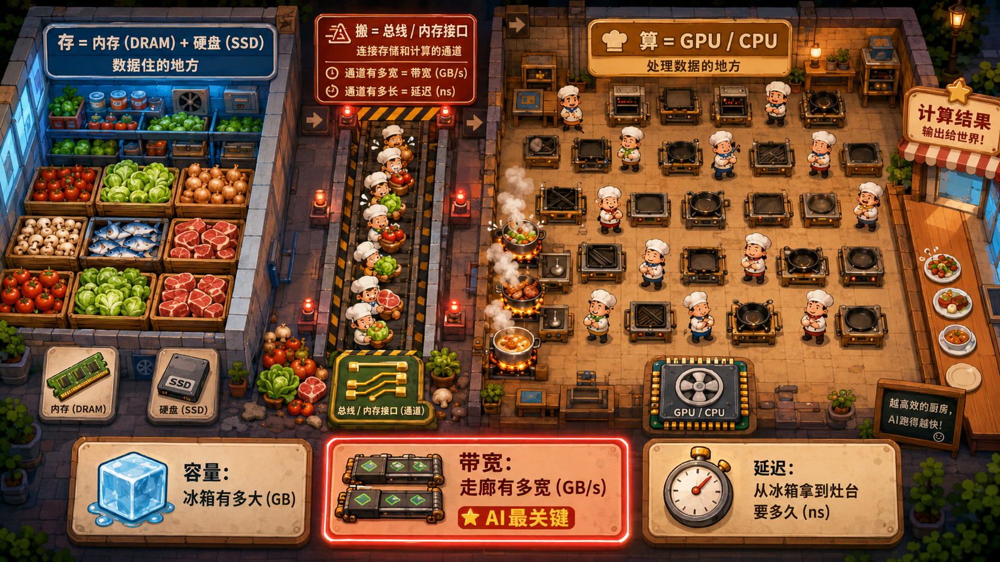
灶台 = 计算核心 · 冰箱 = 内存 · 走廊 = 总线 — 走廊的宽度和长度决定了数据搬运效率
衡量搬运能力的三个维度
内存技术——DDR、GDDR、HBM——本质上都在优化这条「走廊」。优化什么？三个维度：
维度
定义
单位
解决什么问题
容量 内存能同时存放的数据总量
GB / TB
模型参数放不放得下。放不下就无法运行，必须拆分到多张卡上
带宽 单位时间内内存与计算核心之间能传输的数据量
GB/s
数据搬运的吞吐量。带宽不够，计算核心空转等数据——AI推理速度的决定因素
延迟 从发出数据请求到第一个bit到达的等待时间
ns
单次响应的速度。延迟高，即使带宽大，第一口数据也要等很久
对AI来说，带宽是生命线 。大模型每生成一个token，都要把模型参数从内存搬一遍到计算核心。搬的速度（带宽）直接决定了回答速度。容量决定模型能不能装下，但装下之后，出活快慢全看带宽。
Layer 1
内存墙：搬运为什么跟不上计算
处理器越来越快，但走廊的运送能力没跟上——这个结构性失衡叫「内存墙」。
内存墙（Memory Wall） ：处理器的计算速度增长远快于内存的数据搬运速度，导致处理器越来越多的时间花在等待数据上，而不是计算上。这个概念由Wulf和McKee在1995年提出，描述的是一个持续恶化的结构性问题。
为什么会出现这个失衡？因为两条技术路线的增速不同。处理器受益于摩尔定律（晶体管密度每两年翻倍），算力年增速约50%。而内存带宽的提升依赖提高时钟频率和加宽总线，受物理约束更大，年增速只有7-10%。
~50%
处理器算力年增速
摩尔定律驱动，1980-2020
~7%
内存带宽年增速
受物理约束，DDR系列历史
1000×+
40年累积剪刀差
Wulf & McKee, 1995
这个差距的后果很直接：40年前处理器等内存数据只需要几个时钟周期，今天需要等几百个时钟周期 。处理器的大部分时间不是在计算，而是在等数据到位。内存墙就是HBM存在的根本原因——如果搬运速度能跟上计算速度，就不需要HBM这种特殊技术。
Layer 0.6
DDR是怎么提速的
降电压、提频率、扩预取、拆通道——20年来在同一条64位路上用尽了所有花招。
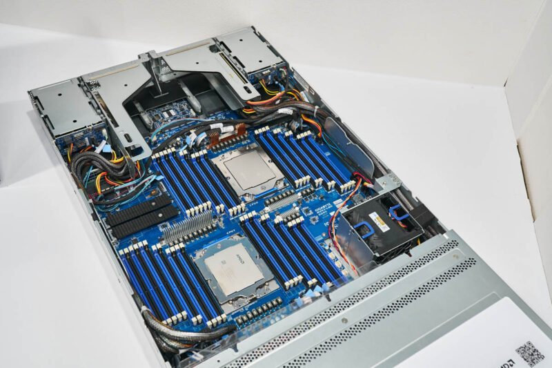
服务器主板实物：蓝色竖排是DDR DIMM插槽，银色方块是CPU插座。看上去已经很近了，但PCB走线实际路径仍有5-8cm——后面你会看到HBM把这个距离压到了2-3mm
内存的最小存储单元是一个微型电容加一个晶体管——充了电是「1」，没充电是「0」。电容会漏电，必须每隔几毫秒全部重新充一遍，这就是DRAM里「Dynamic」（动态）的含义。
DDR（Double Data Rate，双倍数据速率） 的核心创新：普通内存在时钟上升沿传一次数据，DDR在上升沿和下降沿各传一次——同样频率，带宽翻倍。DDR5标称6400 MT/s但实际时钟只有3200MHz，就是因为每个周期传两次。从DDR1到DDR5，20年做的是同一件事：在同一条64-bit宽的通道上，用各种花招让数据跑得更快。
世代
年份
电压
预取宽度
核心手段
有效频率
DDR1
2000
2.5V
2n
双倍数据率
200-400 MT/s
DDR2
2003
1.8V
4n
降电压提频
400-1066 MT/s
DDR3
2007
1.5V
8n
预取翻倍
800-2133 MT/s
DDR4
2014
1.2V
8n
Bank Group并行
2400-3200 MT/s
DDR5
2020
1.1V
16n
通道分裂+PMIC
4800-8000 MT/s
20年优化的共同特征
手段不同，但本质一样：在同一条64-bit宽的通道上，用各种花招让数据跑得更快、每次搬得更多 。通道没有变宽（始终64位），距离没有缩短（内存条离CPU始终几厘米），变的只是频率和每次搬运的效率。
20年提了16倍频率，带宽确实翻了16倍。但这些花招正在逼近物理极限——电压已经从2.5V降到1.1V快降无可降，预取宽度翻到16已经带来严重的粒度问题，频率到8GHz信号完整性在崩溃。下一节讲：为什么这条路走不通了。
Layer 3
DDR提频为什么走不通了
信号失真、线路串扰、功耗三次方、电容刷新——四道物理墙堵死了提频这条路。
上一节讲了DDR 20年来怎么提速。手段用尽之后，为什么不能继续提？不是工程能力不够，是物理定律不允许。四个极限同时逼近：
物理极限
机制
DDR5现状
信号失真 频率越高，电信号在铜线上波形越容易变形，「1」和「0」的边界模糊
8GHz信号跑几厘米已严重失真，ECC纠错开销越来越大
串扰 相邻铜线电磁互相干扰，频率越高、线越密集越严重
加大线间距能缓解，但PCB面积有限——间距大了通道位宽就上不去
功耗三次方 芯片动态功耗与频率大致呈三次方关系——频率翻倍，功耗涨约8倍
1.1V高频下发热已接近上限，再提频要上液冷——给内存条上液冷不现实
电容刷新 制程越先进电容越小、漏电越快，刷新越频繁，占用总线时间越多
刷新调度算法已很复杂，有效带宽因刷新开销反而在下降
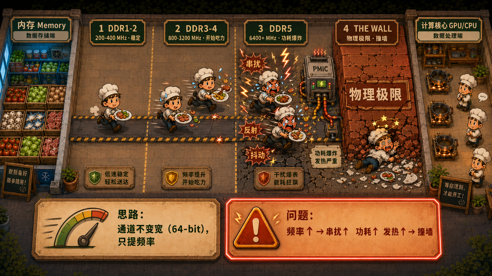
DDR提频的四道物理墙：信号失真、线路串扰、功耗三次方上涨、电容刷新占带宽
四个极限的共同指向：所有提速手段都是在64-bit位宽、厘米级距离的框架内挣扎，但这个框架本身就是瓶颈 。路只有64车道宽，仓库在几厘米外——跑得再快也跑不出这个格局。需要换一种完全不同的思路。
Layer 4
GPU出现，GDDR的第二条路
DDR喂不饱几个CPU核心，GPU几千个核心同时要数据——GDDR把通道加宽到6车道来应对。
DDR提频撞墙是在CPU时代就存在的问题。GPU的出现让矛盾恶化了几个数量级。
CPU（Central Processing Unit，中央处理器） ：少量核心（几个到几十个），每个核心极强，擅长串行处理复杂逻辑。GPU（Graphics Processing Unit，图形处理器） ：数千个简单核心，擅长同时处理大量相同的简单运算（并行计算）。AI训练中的矩阵乘法——大量相同的加法和乘法——天然适合GPU的并行架构。
并行带来了新的带宽需求：数千个核心需要同时有数据可算 。DDR的64位总线给几个CPU核心供数据已经吃力，给数千个GPU核心同时喂数据，带宽缺口直接放大了几个数量级。
GPU行业的应对是GDDR（Graphics DDR） ——专为图形处理器设计的内存。核心改进有两个：一是把总线从64位加宽到256-384位，相当于走廊从1条车道拓宽到6条；二是把内存芯片焊在GPU同一块PCB板上，距离从主板级别缩短到板级。
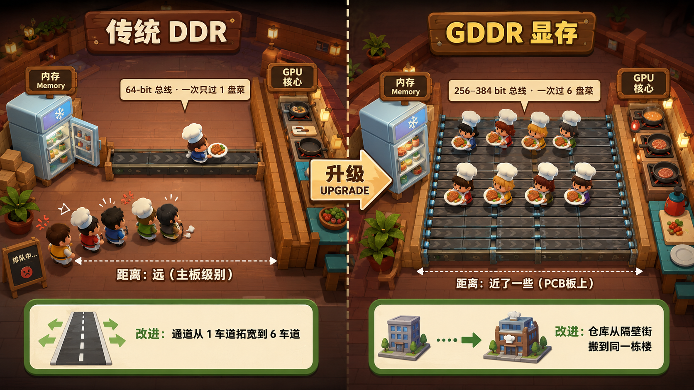
从DDR到GDDR：通道从1车道拓宽到6车道，仓库从隔壁街搬到同一栋楼
64 bit
DDR 总线宽度
标准内存，喂CPU
384 bit
GDDR6X 总线宽度
加宽6倍，距离缩短
1024 bit
HBM3 总线宽度
加宽16倍，距离缩短到mm级
GDDR确实是一次重要改进——通道更宽了，距离近了一些。但它有两个从根本上无法解决的硬伤。
硬伤一：距离仍然太远
GDDR芯片分散在PCB板上，离GPU仍有几厘米。几厘米在人眼里很短，但在纳秒级的芯片世界里是巨大的距离。2014年斯坦福教授Mark Horowitz在"Computing's Energy Problem"演讲中给出了量化答案：
搬运1个bit数据消耗的能量，是对这个bit做一次运算的20倍。 更关键的是，搬运能耗中约90%花在信号通过导线传播的路径上 ——距离越远，能耗越高，延迟越大。
~1 pJ
一次64位浮点运算
Horowitz, Stanford 2014
~20 pJ
从DRAM搬1个bit到计算核心
含路径传输能耗
数据跑1厘米和跑1毫米，功耗差一个数量级。真正的瓶颈不是「车跑多快」也不是「路有多宽」，是「仓库放多近」 。
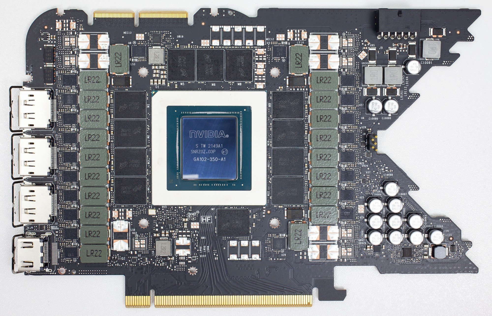
RTX 3090裸板实物（GA102）：中间蓝绿色方块是GPU die，周围24颗标注LR22的灰色芯片是美光GDDR6X——离GPU 2-4cm，数据就在这段PCB走线上跑
硬伤二：平面面积有限
PCB板就那么大，GDDR芯片摊在GPU周围的平面上，数量有物理上限。想要更多带宽就需要更多芯片，但PCB放不下了。不可能把电路板无限做大——散热、信号完整性、制造成本都不允许。
GDDR方案（左）：芯片散布在PCB上，离GPU 2-4cm；HBM方案（右）：通过硅中介层紧贴GPU，距离仅2-3mm
三条路都撞墙 → HBM的逻辑起点
回顾一下走到这里的完整路径：
第一条路（DDR提频） ：在64位通道上拼命提速，撞上信号完整性、串扰、功耗、刷新四道物理墙。第二条路（GDDR加宽） ：通道拓宽到384位解决了宽度，但距离仍是厘米级，90%能量浪费在路上。第三个约束（面积） ：PCB平面有限，芯片数量有上限。
三个约束指向同一个结论：在现有的平面布局框架内，无论怎么优化都有天花板 。必须换框架。
HBM的设计逻辑从这里出发：既然平面上路修不够宽，那就竖起来。 垂直堆叠解决面积、TSV解决层间距离、硅中介层把内存贴到GPU旁边——把距离从厘米压到毫米，而不是在原有距离上提速。
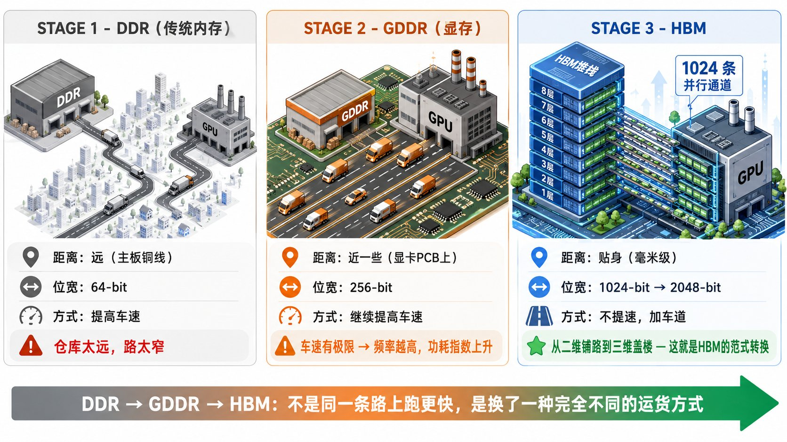
三条路线的演进：DDR 提频率 → GDDR 加宽度 → HBM 换框架（垂直堆叠 + 距离从厘米压到毫米 + 1024位总线）
Layer 5
HBM如何解决这三个问题
垂直堆叠解决容量密度，TSV解决层间互连距离，硅中介层解决芯片间距离。
HBM的设计思路一句话就能说清——把内存叠起来，贴到GPU旁边 。不在平面上扩展，向上盖楼；不靠铜线远距离传输，靠硅穿孔垂直导通；不让内存隔几厘米喊话，直接焊在一块硅片上面对面。
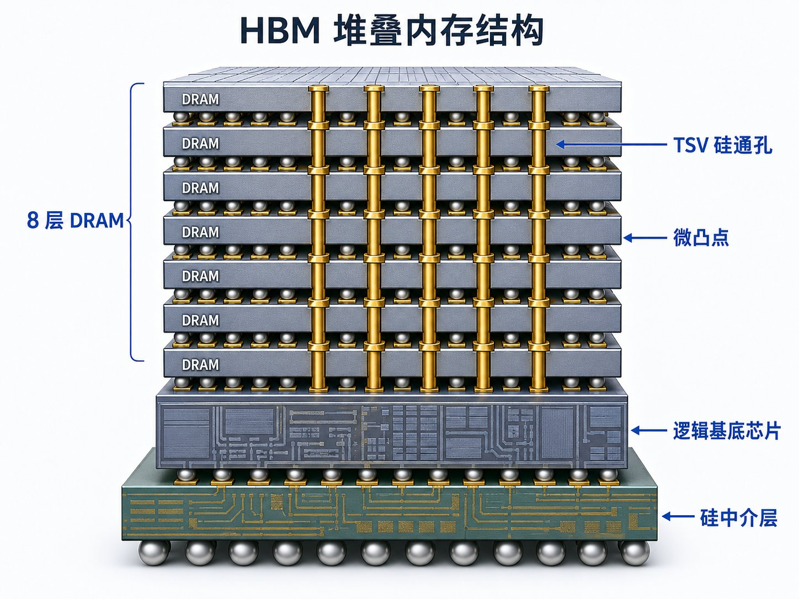
HBM 剖面：多层 DRAM + TSV 垂直互连 + Base Die + 硅中介层
三个工程动作分别解决一个瓶颈：
瓶颈
HBM解法
效果
面积不够放 垂直堆叠（3D Stacking） ：4-16层DRAM像楼层一样叠起来同样面积放下数倍内存，每层独立传输，总线宽度随层数增加
层间怎么通信 TSV（硅穿孔） ：每层打几千个微米级垂直铜柱，直接导通上下层信号穿过不到100μm——不到头发丝直径，层间距离几乎为零
内存离GPU太远 硅中介层（Silicon Interposer） ：超大硅底座，GPU和HBM并排贴上去距离从几厘米缩到2-3mm ，缩短约20倍
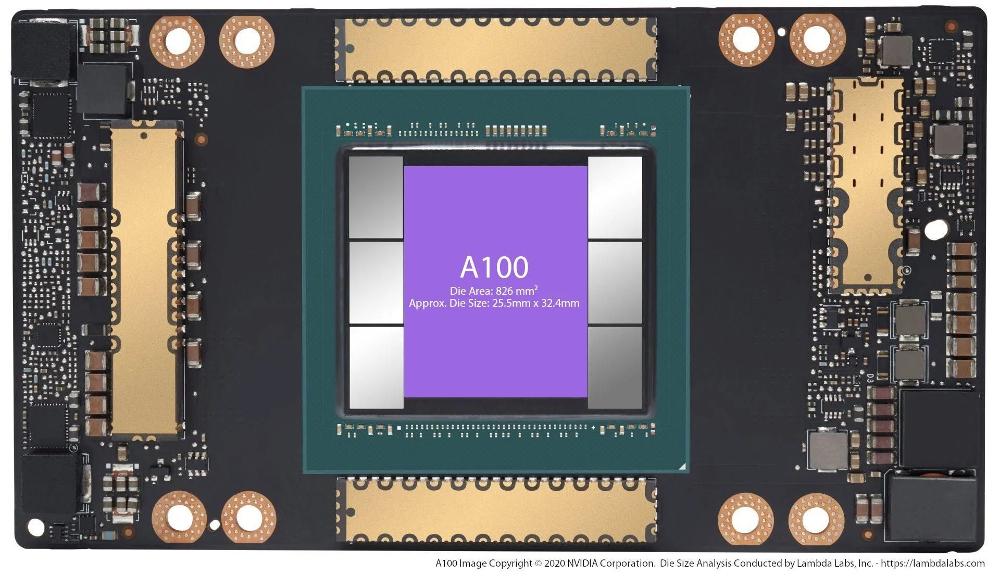
A100 SXM4实物（图源：Lambda Labs）：紫色区域是GPU die（826mm²），左右两侧银灰色方块是HBM2E堆栈——距离仅2-3mm，和上图GDDR的几厘米形成鲜明对比
2-3mm仍然不是零，一颗GPU配6-8颗HBM时最远那颗距离更长。距离问题被大幅缓解但没有彻底消除——这也是为什么更远的未来方向是存内计算（PIM），从根本上取消搬运。
从「想到」到「量产」：五个互相矛盾的物理难题
设计思路清晰，但从2008年AMD启动研发到2013年第一颗HBM才造出来，中间隔了5年。难在要同时解决五个物理问题，而且它们互相矛盾：
制造难点
做什么
为什么难
互相矛盾
TSV打孔填铜 每层硅片蚀刻几千个深宽比20:1的微米级深孔，用铜填满
一个空洞就断路，一个裂纹就报废
孔越多 → 良率越低
晶圆减薄 每层DRAM从775μm磨到30-50μm——半根头发丝
硅片极脆，应力导致翘曲、碎裂
越薄越脆 → 加重堆叠难度
多层堆叠键合 8-16层减薄硅片精确对齐焊接，几万个微凸点逐一接触
对准精度±1μm，温度/压力窗口极窄
层数越多 → 累积误差越大
测试验证 堆叠完成后才能做最终电气测试
坏一层整颗报废，成本$200-400全废
层数越多 → 报废成本越高
散热 中间层被上下夹住，热量无法横向散出
温度每升10°C，DRAM刷新频率翻倍，功耗暴增
叠多了更热 → 性能反降
良率按乘法衰减——单层差2个百分点，叠到16层整体差距被放大到24个百分点。以下为数学模型演示（假设单层良率，计算堆叠后整体良率），非实际企业数据：
假设单层良率
8层堆叠
12层堆叠
16层堆叠
99%
92%
89%
85%
97%（只差2%）
78%
69%
61%
反映到企业层面，良率差距直接决定了谁赚钱谁亏钱：
企业
HBM3E整体良率
现状（截至2026年中）
SK海力士 ~80%（2024.05公开）
NVIDIA主力供应商，Q1 2026营业利润率72%；HBM4正在爬坡，目标追平HBM3E良率
Samsung ~40-60%（2024分析师估算）
2025.09通过NVIDIA 12层HBM3E认证，Q3 2025开始出货，2026产能已售罄
Micron 未公开
12层良率已超过8层，HBM4目标2026 Q2高良率量产
良率来源：TrendForce 2024.05（SK海力士）、TrendForce 2024.09（Samsung）、Micron FQ3 2025 Earnings、KEDGlobal 2025.09（Samsung认证）、TrendForce 2026.04（SK海力士HBM4）
全球只有这三家能做HBM。良率差距的背后是工艺积累——SK海力士从2013年量产第一颗HBM至今已迭代四代，先发优势转化成了良率壁垒。
制造深潜
五个互相矛盾的物理难题
TSV打孔、晶圆减薄、堆叠键合、测试验证、散热——每个都是极端工程，而且解决一个会加重另一个。
HBM从设计图到成品要穿过五道工艺关卡。它们不是独立的：减薄了更脆（加重堆叠难度），叠多了更热（加重散热），TSV越多良率越低（加重测试报废）。每一步的设备和材料都集中在1-2家公司手里——这正是「卖铲人」逻辑的物理根基。
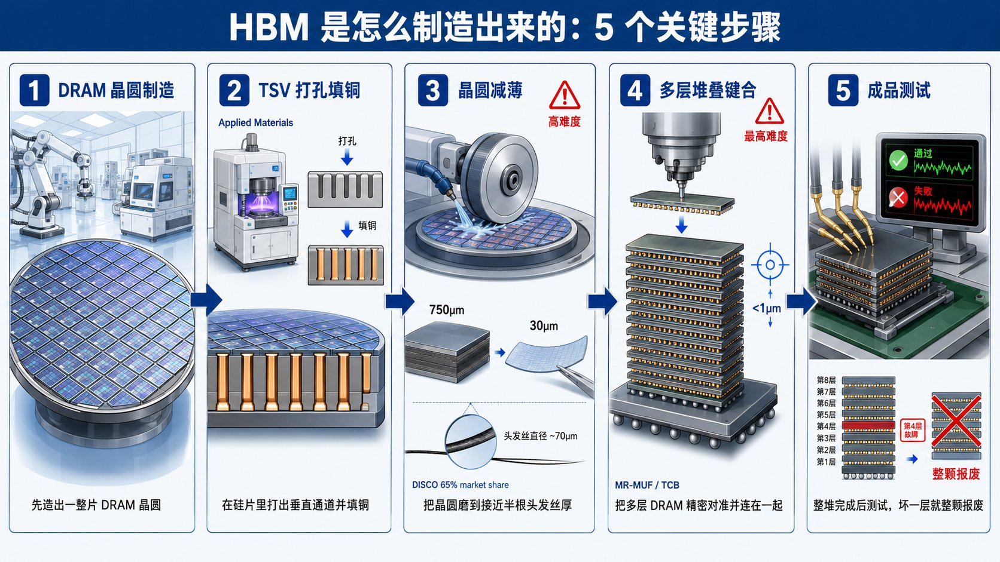
从DRAM晶圆到HBM成品：晶圆制造 → TSV打孔 → 减薄 → 堆叠键合 → 测试
这一步要做什么
在每层DRAM硅片上打出几千个垂直通道，用铜填满，让数据能在叠起来的多层之间上下通行。这就是TSV（Through-Silicon Via，硅通孔） ——HBM的「垂直电梯」。
为什么必须做
传统芯片所有线路都是「平着走」的，在芯片表面横向布线。把DRAM叠起来了，但层与层之间没有垂直通道，等于盖了8层楼但没装电梯——每层的数据出不去也进不来。没有TSV，堆叠就是摆设，多层DRAM无法协同工作，带宽不会因为叠了8层就变成8倍。
怎么做的
第一步：蚀刻深孔。 用深反应离子蚀刻（DRIE）技术，在硅片上打出几千个深孔。孔的直径5-10μm（头发丝的1/10），深度50-100μm，深宽比10:1到20:1。想象一下：拿一根牙签在一块豆腐上扎一个直径0.1mm、深2mm的洞——而且要扎几千个，间距均匀，深度一致，内壁光滑。
第二步：绝缘层沉积。 孔打好了，但硅本身导电。如果直接填铜，电流会漏到硅里面去导致短路。所以先在孔壁上镀一层极薄的氧化硅（绝缘层，厚度几十纳米），然后再镀阻挡层（防止铜扩散到硅里）和种子层（让铜能附着）。
第三步：电镀填铜。 把晶圆泡进硫酸铜溶液通电，铜离子从孔底往上一层层沉积。必须从底部开始往上填，不能从两边同时填——否则中间会留空洞。一个空洞 = 一条断路 = 这颗芯片废了。 孔越深越窄，铜离子越难到达底部。如果填充速度不均匀，顶部先封口了底部还空着，就产生空洞（void）。
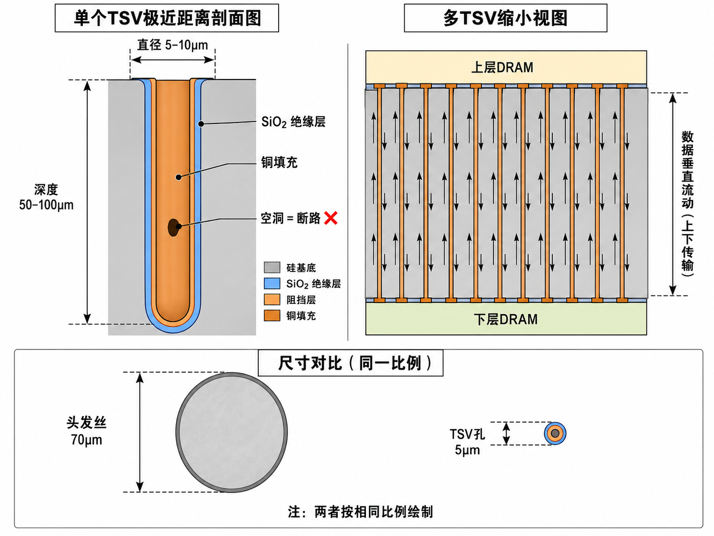
TSV剖面：5-10μm直径的深孔穿透硅片，填满铜——一个空洞就是一条断路。右侧为多TSV阵列贯穿上下层DRAM
谁的设备
蚀刻（打孔）： Applied Materials （应用材料，美国）的Producer InVia 2系统是行业标准配置，几乎垄断高端TSV蚀刻。深宽比控制、侧壁垂直度、均匀性三者同时做到极致，一台设备$5-10M。Lam Research （泛林半导体，美国）在中低端TSV有份额。TEL （东京电子，日本）主要做绝缘层沉积环节。中微公司 （中国）在追赶，已能做部分TSV蚀刻，但高端深宽比的精度和均匀性仍有差距。
铜填充（电镀）： Applied Materials同样强势。Ebara （荏原，日本）电镀设备有一定份额。
做到什么水平
>99.5%
SK海力士 TSV良率
几千个孔中不合格 <0.5%
10:1–20:1
深宽比
5-10μm直径 × 50-100μm深
$5-10M
单台蚀刻设备价格
Applied Materials
三星和美光接近但略低。差距不在设计，在几千个孔的一致性控制 ——这是工艺积累，不是买了设备就能做到的。
这一步要做什么
把每层DRAM硅片从原始的750μm磨到30μm——比半根头发丝还薄（头发丝直径约70μm），让8-12层叠起来的总高度可控。
为什么必须做
不减薄会怎样？8层 × 750μm = 6mm。这个高度装不进封装壳体、热量从中间传不出去、和GPU的物理距离也因为高度而变远。更关键的是，减薄后TSV铜柱要从背面露出来才能和上一层焊接——不磨到位，层间连不上。所以减薄不只是「变矮」，它同时决定了堆叠能不能焊得上、散热能不能传得出。
怎么做的
第一步：粗磨（Grinding）。 把晶圆正面（有电路的那面）朝下贴在保护胶带上，用金刚石砂轮从背面磨，从750μm磨到约100μm。这一步快但粗糙。
第二步：精磨+抛光（CMP，化学机械抛光）。 从100μm磨到50μm再到30μm。用化学液加抛光垫同时作用，边腐蚀边磨。目标：表面粗糙度 < 1nm（原子级平整）。为什么要这么平？因为后面堆叠时上下两层靠微凸点焊接，表面不平就会导致高的焊上了矮的没焊上——虚焊等于断路。
第三步：TSV露出（TSV Reveal）。 磨到30μm后，之前从正面打的TSV铜柱从背面露出来了。露出的高度必须精确控制在几微米——太高会顶到上一层压碎，太低和上层微凸点接触不上导致虚焊。这一步是减薄环节最精密的部分：磨多了铜柱损坏，磨少了铜柱不露。
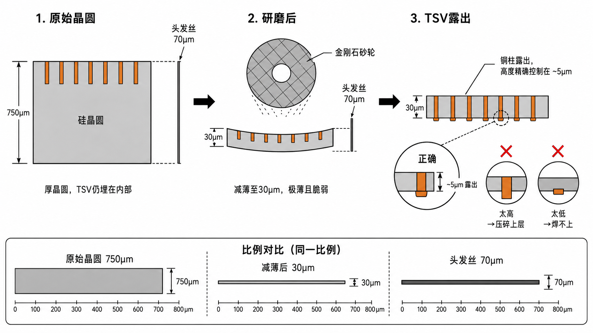
晶圆减薄三阶段：750μm原始厚度 → 研磨到30μm（比头发丝还薄）→ TSV铜柱从背面精确露出
谁的设备
DISCO （迪思科，日本 6146.T），市占率65%+。为什么能垄断三个原因：
一、砂轮技术。 DISCO自己研发金刚石砂轮，颗粒均匀度行业第一。颗粒不均匀导致磨出来厚薄不一，良率暴跌。这个砂轮是核心耗材，用DISCO的机器就得持续买它的砂轮——剃刀模式。
二、在线测厚。 磨的过程中实时用红外光测量剩余厚度，精度±1μm。30μm目标厚度允许误差只有3%。别家设备测厚精度差，只能磨完再测，废品率高。
三、超薄硅片搬运系统。 30μm的硅片像纸一样会弯曲，搬运时稍微碰一下就碎。DISCO的自动搬运臂用真空吸附加气垫缓冲，碎片率 < 0.1%。
竞争者： 东京精密（Accretech，日本）约15-20%份额。Okamoto（冈本，日本）低端市场。中国：盛美上海、华海清科在追赶，但30μm级的精度和良率仍有明显差距。
30μm ±1μm
DISCO减薄精度
碎片率 <0.1%
65%+
DISCO全球市占
砂轮+测厚+搬运三重壁垒
5-10%
竞争者在30μm的良率差距
50μm没问题，30μm致命
这一步要做什么
把8-12层减薄后的DRAM精确对齐、焊接固定在一起，形成一个电气导通的整体堆栈。每层几千个微凸点必须和下层TSV孔一一对准，误差小于1μm。
为什么必须做
前面两步做完了TSV（垂直通道）和减薄（变薄），但此时每层还是散装零件。不把它们焊到一起，通道就是空的——数据没有物理路径从第1层走到第8层。而且这一步的精度直接决定整颗HBM的命运：一次对准偏了，那一层的几千个连接全部错位，整层废掉。8层叠在一起就是8次对准，每次都不能偏。
MR-MUF：SK海力士的独家工艺
MR-MUF（Mass Reflow with Molded Underfill） 分三步完成：
第一步：逐层放置但不焊接。 用高精度贴片机（Die Bonder）把8层DRAM一层层放到Base Die上，每层靠临时粘合剂固定位置，对准精度 < 1μm。
第二步：一次性整体回流焊。 把整个8层堆栈送进回流焊炉，加热到约250°C，所有微凸点（锡银合金）同时融化焊接。关键在于整体加热，温度均匀——每层受到的热应力一样，不会因为反复加热导致底层损坏。
第三步：GMC灌注固化。 焊完后层与层之间有微小缝隙（几十微米）。把整个堆栈放进模具，注入液态GMC（颗粒状环氧模塑封料），GMC在高压下流入所有缝隙然后加热固化。GMC的关键特性：导热系数高（比传统底部填充材料好2-3倍）、流动性好（能填满极窄缝隙）、固化后硬度适中。
GMC供应商：长濑化学 （Nagase，日本）主供，日立化成 （现Resonac，日本）备选，华海诚科 （中国）在突破中但尚未进入SK海力士供应链。GMC材料配方是核心机密。
TCB：三星/美光主导的工艺
TCB（Thermal Compression Bonding，热压键合） 做法完全不同——逐层焊接：放第1层到Base Die上，加热到300-350°C加压焊好，冷却固化，再放第2层，重复。每一层都经历一次300°C+的加热冷却循环。第1层被加热了8次，第2层7次……底层反复受热，热应力逐层累积，微凸点可能劣化、虚焊。
TCB设备商： ASMPT （0522.HK，香港）TCB设备市占率最高，TCW系列也在开发无助焊剂版本。BESI （荷兰）主要布局混合键合（下一代）。K&S （美国，已被Kulicke & Soffa收购）做传统键合设备。
为什么路线选择决定了格局
三星为什么选TCB？ 三星是IDM（自己设计+自己制造），内部有成熟的TCB产线。2016-2018年HBM2时代TCB够用（只有4-8层，差距不大）。等到2023年HBM3E要12层时，TCB的劣势突然放大。但此时要切换到MR-MUF需要重建整条产线加开发GMC供应链——来不及了。
美光的选择： 美光也用TCB，但用了一个聪明策略——跳过HBM3直接做HBM3E，在HBM3E上下了很大功夫优化TCB（更低温度、更短周期）。效果：良率追上了三星，份额从7%涨到21%。但仍然不如SK海力士的MR-MUF。
对比项
MR-MUF（SK海力士）
TCB（三星/美光）
加热次数
1次
8次（8层）
底层热循环
1次 250°C
8次 300°C+
层间填充
GMC整体灌注
CUF毛细渗透
散热能力
好（GMC导热系数高）
差（CUF导热系数低）
速度
快（一次搞定）
慢（逐层）
过程控制
整体→出问题全废
逐层→可中间检查
材料依赖
高（GMC是核心机密）
低（标准材料）
12层以上良率
明显优势
劣势放大
8层时差距不大。到12层、16层，MR-MUF的优势急剧放大——这就是三星HBM3E认证反复失败的物理根源，也是SK海力士62% vs 三星17%格局的技术底层。
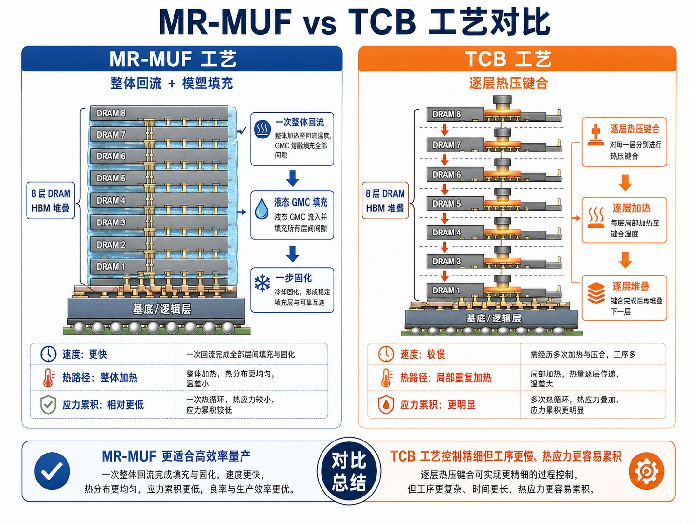
两条工艺路线：MR-MUF一次堆叠整体固化 vs TCB逐层加热加压键合
这一步要做什么
在堆叠前筛掉有缺陷的单层DRAM，在堆叠后验证整颗HBM的全部功能，把报废损失降到最低。
为什么必须做
核心矛盾：HBM必须整堆叠完才能做最终电性能测试。 为什么不能每层测完再叠？因为TSV的连通性只有在上下层都焊接好之后才能验证——第3层的TSV必须穿过第2层连接到第1层，只测第3层看不出来。
不做的后果极其残酷：如果第4层有一个TSV断路，整颗HBM报废——8层DRAM + Base Die + 几千个TSV + 几万个微凸点全部废掉。一颗HBM3E制造成本约$50-80（不含DRAM晶圆成本），加上晶圆成本一颗报废损失$200-400。所以必须在堆叠前尽可能筛掉坏层（降低报废率），堆叠后再做最终验证（确保出厂品质）。
测什么
堆叠后的完整测试覆盖六个维度：每颗DRAM的存储功能（读写正确性），所有TSV的连通性（几千个每个都要通），带宽（1024-bit × 目标频率），功耗（NVIDIA对功耗有严格上限），热表现（目标温度下性能是否稳定），长期可靠性（加速老化测试模拟5年使用）。
堆叠后测试：谁的设备
Advantest （爱德万，日本）V93000系列是HBM测试的事实标准。为什么强：能同时测试1024-bit位宽的所有通道（别家只能分批测），测试速度快（量产需要几秒内完成一颗），和SK海力士、三星都有深度合作。市占率约50-60%。
Teradyne （泰瑞达，美国）UltraFLEX系列在美光和部分三星产线有份额，市占率约30%。
堆叠前筛查：降低报废率的关键
既然叠完才能最终测试，那能不能在叠之前就把有缺陷的层筛掉？这就是KGD（Known Good Die，已知好芯片） 筛查——在堆叠前用光学系统检查每层DRAM的表面：微凸点有没有缺失/变形/偏移、TSV开口有没有堵塞/塌陷、表面有没有颗粒污染。筛掉坏层，就不用等叠完8层才发现第3层有问题。
赛腾股份 （603283.SH，中国）做的正是这个环节——HBM全制程外观缺陷检测。据报已进入三星和SK海力士供应链（但缺乏独立来源交叉验证）。全球能做这个的据称只有三家（日本Optima + 赛腾 + 另一家）——需要注意「全球唯三」这个说法来自卖方研报，未找到独立来源确认。
50-60%
Advantest 测试设备市占
V93000系列，事实标准
~30%
Teradyne 市占
UltraFLEX系列
$200-400
单颗HBM报废损失
含DRAM晶圆成本
两道测试缺一不可：堆叠前光学筛查（降低报废率）+ 堆叠后电性能测试（确保出厂品质）。
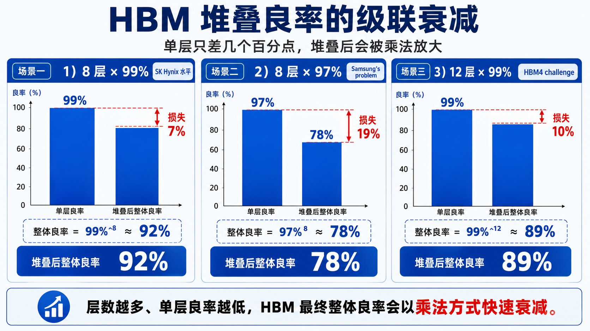
良率级联衰减：单层差2%看起来不多，叠8层后差14%，叠16层后差24%——堆叠前筛查是止损的关键
这一步要做什么
让8层堆叠中的每一层DRAM在紧贴700W GPU的恶劣热环境下，都保持在95°C以下稳定运行。
为什么必须做
前面四个难点——打孔、减薄、堆叠、测试——都是为了把内存叠高叠密。但叠高叠密本身制造了一个新问题：热量出不去。8层硅片叠在一起，热只能从顶部和底部传导出去，中间层（第3-6层）被「闷」住了。HBM紧贴GPU旁边——一颗H100整卡功耗700W。HBM自己也发热（高速读写 = 电容反复充放电 = 发热）。
不解决散热会怎样：性能降频（芯片自动保护）、数据出错率上升（高温下电容漏电更快）、寿命缩短（DRAM寿命和温度指数反相关）、极端情况焊点融化芯片分层。NVIDIA的功耗/温度验收标准极其严格：HBM运行温度必须控制在95°C以下 （部分规格85°C），功耗不能超过预算。三星HBM3E认证失败的原因之一就是功耗超标。
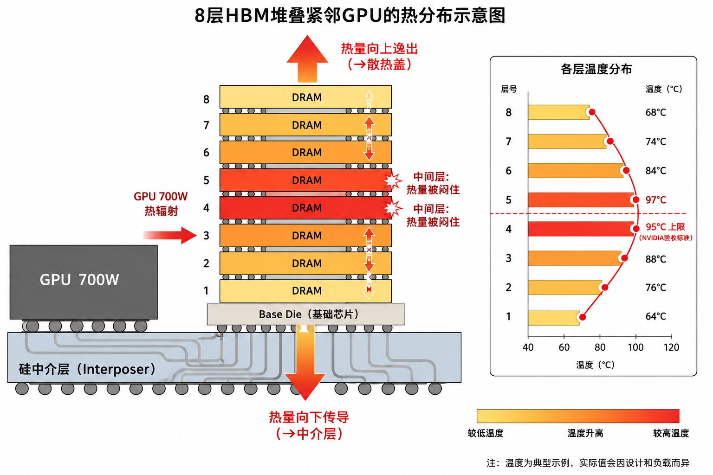
8层堆叠的热分布：中间层（第4-5层）温度最高，被上下层「闷」住；GPU 700W热源紧邻；NVIDIA验收标准95°C
四种散热方案
方案一：层间填充材料。 MR-MUF的GMC材料导热系数约3-5 W/mK，TCB的CUF约0.5-1.5 W/mK——GMC散热能力是CUF的2-5倍 。这是MR-MUF在12层以上拉开差距的又一物理原因。
方案二：TSV本身也是散热通道。 铜的导热系数约400 W/mK，远超硅的150 W/mK。几千根铜柱贯穿8层，等于在楼里装了几千根散热铜管。TSV越密集散热越好——但TSV越密集良率越难保证，又是权衡。
方案三：芯片级散热结构。 SK海力士在HBM3E顶层加了散热盖（Heat Spreader），把热量横向扩散到更大面积。美光的方向是沟槽冷却（Trench Cooling）——在硅片背面蚀刻微型沟槽增加散热表面积。美光621项HBM专利中很大一部分与此相关，被认为是HBM4/HBM5的关键技术。
方案四：封装级散热。 台积电在CoWoS硅中介层上也做了散热优化。但最终散热还是要传导到封装外壳、散热器、冷却系统。GB200整卡功耗1200W——液冷已经是必须的了。
关键材料供应商
GMC材料（MR-MUF核心）： 长濑化学（Nagase，日本）主供应商，日立化成（现Resonac，日本）备选，华海诚科（中国）在研发中尚未进入SK海力士供应链。
散热界面材料（TIM）： 信越化学（日本）全球第一，Dow（陶氏，美国），英维克（中国）做数据中心液冷系统，同时供应Google TPUv7和NVIDIA。
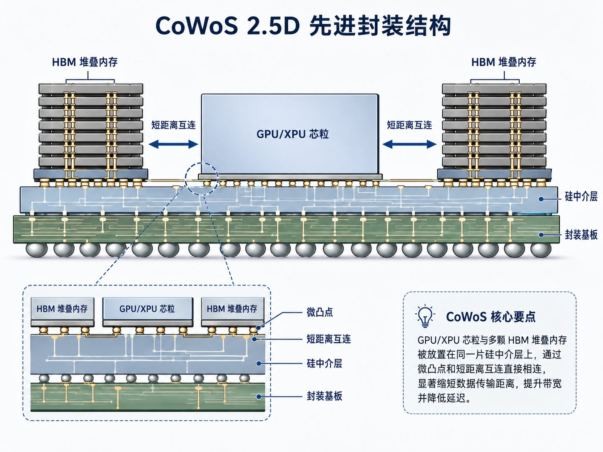
最终形态：CoWoS封装——GPU居中 + HBM两侧 + 硅中介层，五个难点的解法在这里汇聚
五个难点攻克后的成果：HBM各代规格演进
从2013年第一颗HBM到2025年的HBM4，每一代的进步都是上述五个难点同时推进的结果——层数从4层到16层（减薄+堆叠），带宽从128 GB/s到2+ TB/s（TSV密度+总线宽度），而良率和散热始终是决定量产节奏的瓶颈。
世代
标准年份
堆叠层数
总线宽度
单栈带宽
单栈容量
HBM1
2013
4层
1024-bit
128 GB/s
1-2 GB
HBM2
2016
4-8层
1024-bit
256 GB/s
4-8 GB
HBM2E
2018
8层
1024-bit
460 GB/s
8-16 GB
HBM3
2022
8-12层
1024-bit
819 GB/s
16-24 GB
HBM3E
2023
8-12层
1024-bit
1.2 TB/s
24-36 GB
HBM4
2025
12-16层
2048-bit
2+ TB/s
36-48 GB
五个难点的完整产业地图
环节
关键设备/材料商
垄断程度
中国进度
TSV蚀刻
Applied Materials
准垄断
中微公司在追
TSV铜填充
Applied Materials
准垄断
有一定能力
晶圆减薄
DISCO 65%
强垄断
盛美/华海清科在追
堆叠键合设备
ASMPT / BESI
双寡头
有差距
GMC材料
长濑化学（日本）
高度集中
华海诚科在研发
测试（电性能）
Advantest 60%
双寡头
差距大
测试（光学检测）
赛腾 / Optima
寡头
赛腾已进入
散热材料
信越化学 / Dow
高度集中
英维克在液冷端
这些难题值多少钱
五个制造难点不只是技术细节——它们是护城河的物理基础。每一个「难」对应一条商业逻辑：别人做不到 → 供给集中 → 定价权 → 超额利润 。
先看蛋糕有多大：
$22B → $130B
HBM市场规模
2024 → 2033E，CAGR 42%（BofA / Counterpoint）
5-6×
HBM vs 普通DRAM价格倍数
同样的硅片，堆叠后价格翻5倍
五个难点各自创造了什么商业价值：
制造难点
核心解决者
商业体现
TSV打孔
Applied Materials
TSV蚀刻+填铜准垄断。HBM每多一层 = 多打一轮孔 = AMAT多卖一轮设备，收入随层数线性增长
晶圆减薄
DISCO（65%市占）
减薄精度决定良率上限。设备排单排到两年后，客户没有替代选项
堆叠键合
SK海力士（MR-MUF）
最大的商业分水岭。 MR-MUF一个工艺选择 → 12层良率领先 → 最早通过NVIDIA认证 → 份额54%→62%，三星39%→17%。SK海力士HBM收入$1B（2022）→ $20B+（2025），毛利率50-60%
测试验证
Advantest（50-60%市占）
12层堆叠 = 测试复杂度指数增长 → 单颗测试成本占比上升 → 测试设备需求随层数增长
散热
信越化学 / Dow
散热界面材料决定HBM能否稳定运行。层数越多热密度越高 → 材料用量和技术要求同步上升
技术难度的商业倍率 ：普通DRAM毛利率30-40%，HBM毛利率50-60%——多出来的20个百分点就是这五个制造难点的「入场费」。解决难题的公司不只赚到了利润，它们构建了12-18个月内无法复制的壁垒（NVIDIA认证周期）。而且层数每升一代（8→12→16→20），每个难点的设备和材料用量都在增加——这不是一次性的护城河，而是随产品演进自动加深的护城河。
规律很明显：每个难点的关键设备和材料都集中在1-2家公司手里。「不管谁赢HBM争霸，卖铲子的人都赚钱」——但前提是铲子只有它能卖。
Layer 6
AI为什么让HBM需求只增不减
传统程序可以用缓存作弊，大模型不行——每生成一个token都要遍历全部参数。
Layer 1到Layer 5讲的是内存搬运的通用问题和HBM的解法。但HBM最初是为高性能显卡设计的——真正让它变成「必需品」的，是AI大模型的出现。AI的数据访问模式和传统程序完全不同，榨干了HBM的性能。
传统程序为什么能容忍内存墙
传统程序有数据局部性（Locality） ：刚用过的数据大概率马上还会再用。处理器利用这个规律，把常用数据缓存在离自己最近的SRAM里（L1/L2 Cache），大部分时候不需要去远处的内存取数据。这是传统计算能容忍内存墙的原因——缓存帮忙挡住了大部分搬运需求。
大模型打破了这个规律
大模型的Transformer架构 打破了数据局部性。Attention机制要求每个token和序列中所有其他token做交叉计算，数据访问接近随机遍历，缓存命中率极低。而且模型参数量巨大，每次推理都要把参数从头搬一遍。
训练 vs 推理：瓶颈不同
训练是算力受限（compute bound） ——瓶颈在矩阵运算量，GPU算得越快训练越快。推理是带宽受限（memory bandwidth bound） ——瓶颈在把参数搬到计算核心的速度，GPU算力再高，数据到不了也白搭。
以H100为例，看推理时GPU的真实处境：
990 TFLOPS
H100 峰值算力（FP16）
每秒能做990万亿次计算
3.35 TB/s
H100 HBM带宽
每秒能搬3.35万亿字节数据
295
GPU设计的算术强度（FLOP/byte）
GPU期望：每搬1字节做295次计算
1-2
推理decode实际算术强度
实际：每搬1字节只做1-2次计算
差距超过100倍 。推理时GPU的计算核心大部分时间在空转等数据——算力利用率可能只有1-2%。卡脖子的不是GPU算得不够快，是HBM搬数据搬得不够快。
HBM带宽翻一倍，推理速度接近翻一倍；算力翻一倍，推理速度几乎不变。 AI产业正从训练转向大规模推理部署——这正是HBM的核心价值。
AI为什么还需要更大的容量
带宽解决的是「搬得快不快」，还有一个问题：「装得下装不下」。
Transformer模型推理时会产生KV Cache（键值缓存） ——每生成一个新token，都要把之前所有token的中间计算结果缓存在HBM里，避免重复计算。代价是：上下文越长，缓存越大。
以Llama 3.1 70B为例，上下文长度在内存视角意味着什么：
~2.5 GB
8K token（普通聊天）
一问一答，用完即释放
~40 GB
128K token（长文档）
已占满半颗H100的显存
~305 GB
1M token（Agent工作上下文）
单是缓存就要4颗H100
普通聊天是一问一答：KV Cache用完释放，内存周转快。Agent不一样——搜索→阅读→比较→生成→检查，整个过程持续数分钟甚至数十分钟，上下文必须保持连续，KV Cache持续增长且不释放 。一个Agent实例（模型参数~140GB + KV Cache~305GB + 激活值~50GB）需要近500GB 内存。一台服务器同时跑多个Agent，内存需求轻松突破TB级。
双重压力 ：推理需要极高带宽 （数据搬得够快），Agent需要极大容量 且长期占用（数据装得够多）。这两条压力线同时拉满HBM的两个物理极限——这就是HBM层数从8→12→16→20持续攀升的直接驱动力。单靠HBM一种技术能同时满足这两个需求吗？
Layer 7
行业应对：为什么单靠HBM不够
带宽需要HBM，但容量全用HBM太贵——行业走向按需分层。
目标： 理解行业如何同时应对「带宽」和「容量」两重压力。
为什么需要单独讲： 上一章推导出AI对内存的双重需求——推理要极高带宽，Agent要极大容量且长期占用。如果答案只是"用更多HBM"，这篇报告在Layer 5就可以结束了。事实是HBM有三个硬约束使得"全用HBM"不现实，行业必须找组合方案。
HBM的三个硬约束
贵。 HBM3E的平均售价约$10-15/GB（Goldman Sachs 2026年初估算），是DDR5的3-5倍（DDR5约$3-4/GB，2026年Q1合同价）。一台8卡服务器配满HBM的成本已经占整机BOM的30-40%。如果Agent时代每台服务器需要TB级内存，全用HBM意味着仅内存成本就超过$10,000-15,000/TB。
产能有限。 全球只有三家能造HBM，且HBM每消耗一片晶圆的产出容量只有普通DRAM的1/3（3:1挤出比，前面环节二讲过）。2026年三巨头合计HBM产能约能供应市场$54-58B的需求——这些产能早已被NVIDIA和云厂商的保证金锁定，新增需求排不上队。
散热难。 前面s-thermal章节详细讲过：堆叠越高，中心温度越高。12层已接近105°C功耗墙，16层和20层需要全新的散热方案。物理定律给"无限堆叠"画了硬上限。
解法：分层存储架构（Tiered Memory）
核心思路和计算机领域的经典方法一样——按数据的访问频率放在不同介质里。CPU有L1/L2/L3缓存+主存+硬盘的层级，AI推理也在走同样的路：最热的数据放最贵最快的HBM，不常访问的数据放便宜的介质。
层级
介质
延迟
$/GB（2026年估算）
放什么数据
T1 · 最热
HBM3E / HBM4
~ns级
$10-15
当前推理的模型参数 + 活跃KV Cache
T2 · 热
GDDR7 / LPDDR5X
~10ns级
$3-5
prefill阶段预取、decode缓冲
T3 · 温
CXL扩展DDR5
200-500ns
$2-4
KV Cache溢出、多模型热切换
T4 · 冷
NVMe SSD
~μs级
$0.1-0.3
模型权重存储、训练检查点
注意T1到T4的价格落差：HBM比SSD贵100倍，但快1000倍。分层的本质是用延迟换成本——问题在于哪些数据能容忍多少延迟。
短期（2025-2027）：每一代GPU堆更多HBM
最直接的做法，也是NVIDIA当前路线图的主轴。每一代GPU配的HBM规格和数量都在涨：
GPU
HBM代次
容量
带宽
上市
H100
HBM3
80 GB
3.35 TB/s
2022
H200
HBM3E
141 GB
4.8 TB/s
2024
B200
HBM3E
192 GB
8 TB/s
2025
Rubin (VR200)
HBM4
288 GB
22 TB/s
H2 2026
Rubin Ultra (VR300)
HBM4E
384 GB
32 TB/s
H2 2027
Feynman
下一代HBM
TBD
TBD
2028
四年间：容量从80GB涨到384GB（4.8倍），带宽从3.35 TB/s涨到32 TB/s（9.6倍）。但单卡384GB仍然远不够一个Agent实例的近500GB需求（前一章的推算）。多卡并行能拼出TB级容量，但GPU本身也贵——8卡NVL144机柜的HBM总容量约41TB（288GB × 144），这是用钱砸出来的。
另一个物理限制：GPU die周围能放的HBM堆栈数受CoWoS中介层面积约束。Rubin放8颗HBM4，Rubin Ultra用四颗reticle拼接放16颗——硅中介层已经接近5000mm²的工艺极限。继续往上堆，CoWoS本身要先突破。
中期（2026-2029）：CXL分层架构落地
CXL（Compute Express Link） 是一种基于PCIe的互连协议，允许CPU/GPU像访问本地内存一样访问外部扩展内存池，延迟约200-500ns——比HBM慢100倍，但比SSD快1000倍。它填的正是T3那一层的空白。
已经发生了什么： Microsoft在2025年11月上线了第一批CXL内存扩展的云实例。Samsung发布了单条1TB容量的CXL 2.0 DRAM模组，正在三家北美超大规模客户处做认证，预计2026年Q3量产出货。CXL内存扩展市场2025年规模约$1.3B，预计2034年达到$11.8B（CAGR 28.7%）。
对AI推理的实际效果： 最直接的用途是KV Cache卸载——把Agent长上下文积累的KV Cache从GPU显存搬到CXL扩展内存，只在HBM里保留当前活跃的热数据。已有部署案例显示，CXL方案比纯HBM方案节省4-5倍内存成本，同时GPU利用率提升75%、推理吞吐量翻倍（Penguin Solutions + Astera Labs部署数据）。
局限： 200-500ns的延迟对prefill阶段（大量并行计算）几乎无感，但对decode阶段（逐token生成，延迟敏感）有影响。数据在HBM和CXL之间的迁移策略需要软件栈配合——哪些KV Cache该留、哪些该搬、什么时候搬，这是一个调度问题，目前没有标准答案。
长期（2028+）：从根本上改变搬运方式
前面所有方案的共同前提是：数据要从存储搬到计算单元。长期方向是消灭「搬运」本身，或者让搬运的物理代价大幅降低。
PIM（Processing-In-Memory，存内计算） ：在内存芯片内部嵌入计算单元，让数据就地计算，只把结果传回GPU——消灭搬运动作本身。SK海力士的AiM（Accelerator in Memory）已在有限场景部署。Samsung和SK海力士正联合向JEDEC推动LPDDR6-PIM标准化，预计2026年发布标准。业界预测到2027年，PIM计算单元可能直接集成进HBM的Base Die逻辑层。但PIM的编程模型和软件生态远未成熟——硬件能做不代表软件能用。
光互连（Co-Packaged Optics，CPO） ：用光信号代替铜导线传输数据。回看Layer 4：搬运能耗随距离急剧增长——光互连从物理层面改变了这个等式。光信号传输距离更远（厘米→米→公里）、衰减更低、功耗更小。NVIDIA在GTC 2026展示了CPO路线图：Quantum-X InfiniBand光交换机（115 Tb/s，2026年商用），scale-up级CPO计划2027-2028落地。Ayar Labs在2026年3月融资$5亿，专攻光学chiplet量产。这项技术首先解决的不是芯片内部的HBM→GPU搬运，而是机柜之间、服务器之间的数据传输瓶颈——但如果光互连把跨机柜延迟降到接近本地内存的水平，分布式内存池的可行性会大幅提高。
分层架构的代价
分层不是免费午餐。它引入三个新问题：
软件复杂度。 数据放在哪一层、什么时候迁移、迁移粒度多大——这些决策目前没有通用解法。每种模型架构、每种推理场景的最优策略不同。这意味着系统软件的开发成本会显著增加。
延迟不可预测。 如果一次推理请求的KV Cache恰好被换出到CXL层，这次请求的延迟会比正常情况高100倍。对实时性要求高的应用（语音对话、自动驾驶），这种延迟抖动可能不可接受。
数据一致性。 同一份KV Cache在HBM和CXL之间迁移时，需要保证一致性——尤其是多个GPU共享同一个CXL内存池的场景。这本质上是分布式系统的经典难题，只不过搬到了内存层面。
HBM的位置 ：在分层架构中，HBM是T1——速度最快、离GPU最近、价格最贵的那一层。它在未来5年内不会被替代，但它的角色正在从「唯一方案」变成「分层架构的顶层」。堆叠更多HBM是短期必走的路，分层是中期必然的方向，而PIM和光互连代表的是更远期的可能性。对HBM制造商来说，好消息是：不管分层架构怎么演进，T1的位置永远需要最快的内存——那就是HBM。
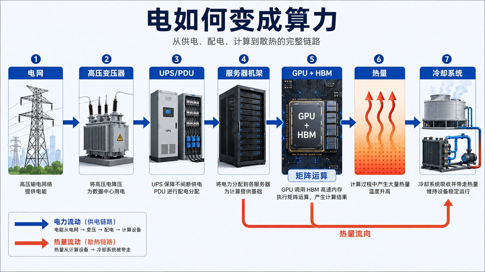
完整链路：供电 → 配电 → 计算（GPU+HBM）→ 散热 — HBM是链路中成本和技术密度最高的环节之一
Timeline
HBM：从实验室到你的每一次对话
20年。从一个没人在意的工艺实验，到支撑你和AI每一次交互的基础设施。
下面的时间线有两条线索：一条是行业发生了什么，另一条是你作为普通人能感知到什么 。大部分时间你感知不到HBM的存在——但它在那里，决定着AI能跑多快、记多久。
2006-2008
GDDR开始喘不上气
GPU核心数从几百涨到上千，GDDR带宽跟不上。AMD内部启动HBM研发——第一个承认「提频率这条路走不通了」
你能感知到： 玩Crysis（2007，被玩家称为「显卡危机」）时，即使买了最贵的显卡帧率也上不去——不是GPU不够强，是显存喂不饱GPU
2009
SK海力士押注TSV技术
SK海力士开始研究TSV（硅通孔）堆叠。行业大部分人觉得GDDR5够用了
你感知不到任何变化 ——这只是一家韩国公司实验室里的事。但14年后这个决定将改写整个内存行业的权力格局
2013
第一颗HBM诞生 · JEDEC发布HBM1标准（JESD235）
SK海力士造出全球首颗HBM。4层堆叠，128 GB/s，1024-bit位宽
你感知不到 ——这颗芯片只存在于实验室和展会上
市场规模：几乎为零
2015
AMD Fury X：HBM第一次进入消费者手中
4GB HBM1，4个堆栈，512 GB/s带宽。售价$649
你能感知到： 4K游戏画面第一次流畅跑起来了。之前4K分辨率下帧率暴跌——4K一帧的数据量是1080p的4倍，GDDR5搬不动。HBM1的512 GB/s带宽让4K成为现实。但代价是只有4GB显存，大型游戏纹理装不下。市场评价：「性能惊艳但容量太小」——HBM被定位为小众极客玩具
2016
NVIDIA P100：从玩家手里到数据中心——转折开始
首款在AI加速器中采用HBM2的产品。16GB HBM2 + CoWoS封装。HBM从「让游戏更流畅」变成「让AI更聪明」
你能间接感知到： Google翻译突然变准了。2016年11月Google上线神经机器翻译（GNMT），训练它的就是搭载HBM2的P100——翻译从「把每个词单独翻」变成「理解整句话再翻」
2018
决定未来格局的工艺发明 · BERT诞生
SK海力士发明MR-MUF堆叠工艺——解决了8层以上堆叠的散热问题。5年后这个工艺让SK海力士拿到62%市场份额。同年NVIDIA V100 + HBM2训练了BERT
MR-MUF你完全感知不到 ——这是制造车间里的工艺改进。但BERT你能间接感知到： Google搜索开始「理解」你的问题了——搜「附近好吃的面馆」不再只匹配关键词，而是理解「附近」「好吃」「面馆」之间的语义关系
2020
NVIDIA A100 + HBM2E → GPT-3训练的主力
40/80GB HBM2E，2 TB/s带宽。确立HBM作为AI计算标配的地位
你能直接感知到： 第一次和AI聊天觉得「它好像真的在思考」。GPT-3写文章、写代码、回答问题——这一切的前提是1750亿参数能被高速喂进GPU，没有HBM的带宽根本跑不动
HBM市场 ~$2-3B
2022
H100成为硬通货 · ChatGPT前身诞生
SK海力士量产HBM3，供应NVIDIA H100。80GB HBM3，3.35 TB/s
你能感知到： ChatGPT的前身（GPT-3.5）开始在圈内传播——「AI好像突然变聪明了」，因为更大的模型终于有足够的内存带宽来训练了。行业感知： H100一卡难求，黄牛价从$25,000炒到$40,000+
HBM市场 ~$2-3B → 开始加速
2023.1
ChatGPT爆发——你直接感知到了
全球用户两个月破亿。行业连锁反应：H100全球抢购 → HBM产能被锁定 → 市场规模从$2-3B起跳
你的感知： 第一次觉得「AI可以替我写邮件、做作业、写代码」。背后的事实：你和ChatGPT的每一次对话，数据都在H100的HBM3里以3.35 TB/s的速度来回搬运
2023-2024
你开始日常使用AI · HBM3E量产
SK海力士率先量产12层HBM3E，独供NVIDIA H200和B200。美光跳级成功（7% → 21%），三星暴跌（39% → 17%）。NVIDIA发布Blackwell，单卡192GB HBM3E
你能感知到： Midjourney画图、Claude写报告、Copilot写代码、Suno作曲——每一次生成都在消耗HBM带宽。AI回复越来越快，图片生成从1分钟缩短到10秒——这背后是HBM3E每颗带宽从819 GB/s提升到1.2 TB/s。你感知不到的战争： 三家公司的市场份额在剧烈翻转
2023: ~$8B → 2024: ~$22B（增长175%）
2025
AI Agent开始出现 · HBM4标准发布 · SK海力士超越三星
HBM4接口翻倍至2048-bit，带宽突破2 TB/s。SK海力士全年营收97万亿韩元、营业利润47万亿韩元，首次超越三星成为全球最大DRAM厂商
你能感知到： AI不只是回答问题了，开始帮你「干活」——预订机票、分析表格、同时处理多个任务。背后的变化：Agent需要长时间占用内存（KV Cache不释放）。聊天像做一盘菜然后清桌子，Agent像同时做20桌宴席且桌子不能清
HBM市场 ~$35-38B
2026
现在 · SK海力士Q1营业利润率72% · NVIDIA Rubin
SK海力士Q1营收52.58万亿韩元，营业利润37.61万亿韩元，单季接近2025全年水平。三星开始出货HBM4。NVIDIA发布Rubin（VR200），配288GB HBM4
你正在感知： Claude、ChatGPT、Gemini的回复质量和速度又上了一个台阶。你可能正在用AI帮你写研究报告（就像现在这样）——每一个token的生成，都在某个数据中心的HBM里以TB/s的速度搬运
HBM市场预测 $54-58B（BofA/Goldman）
2027（预期）
Rubin Ultra + HBM4E量产
NVIDIA Rubin Ultra（VR300）预计H2上市，配384GB HBM4E，带宽32 TB/s。16层HBM4E量产对减薄和散热提出新挑战
HBM市场预测 $75-90B（多家机构区间）
2028-2030（预期）
Feynman架构 · HBM5 · PIM集成
NVIDIA Feynman架构预计采用下一代HBM。HBM5预计采用混合键合、20层以上堆叠。PIM计算单元可能集成进HBM逻辑层。CXL分层架构进入规模化部署
你将会感知到： AI Agent可能成为你的「数字同事」，持续在后台处理工作。模型上下文从10万token扩展到百万token——记住你说过的每一句话。你不会知道HBM5的存在，但你会觉得「AI怎么突然记性这么好」
Bloomberg Intelligence预测HBM市场向$130B迈进（2033年目标）
Industry
产业格局：钱在哪里流动，卡在哪里，谁在赚钱
从空白硅片到AI服务器，六个环节、几十家公司——每一环都有自己的垄断者和瓶颈。
HBM不是一家公司能独立完成的产品。从一片空白硅片到最终装进AI服务器，要经过六个环节，每个环节的「客户」就是下一个环节，每个环节都有自己的瓶颈和垄断者。
①标准制定JEDEC
→
②DRAM晶圆SK/三星/美光
→
③HBM堆叠利润最厚
→
④CoWoS封装台积电垄断
→
⑤整卡/整机NVIDIA/AMD
→
⑥终端客户云厂商
环节一：标准制定 — JEDEC
JEDEC（固态技术协会） 制定HBM的接口标准：位宽、频率上限、堆叠高度、引脚定义。标准一旦发布，所有厂商按这个规格做。HBM1（2013）→ HBM2（2016）→ HBM3（2022）→ HBM4（2025）。
这里不直接赚钱，但掌握标准话语权 = 提前布局下一代 = 先发优势。真正有影响力的不是JEDEC本身，而是标准背后的推动者：HBM1-3的主要技术贡献者是SK海力士；到了HBM4，NVIDIA的影响力越来越大——它是最大买家，它的需求定义了下一代规格。
环节二：DRAM晶圆制造 — 三巨头垄断
全球DRAM市场只有三家公司，合计95%+份额：三星（~40%总份额）、SK海力士（~35%）、美光（~25%）。
注意：DRAM总份额和HBM份额是两回事。 三星DRAM总份额最大（40%），但HBM份额只有17%——因为HBM需要额外的堆叠工艺，三星在这里输了。
DRAM晶圆本身不是瓶颈——三家产线都能造。但HBM用的DRAM有特殊要求：更严格的良率筛选（只有最好的die才能用于堆叠），而且每做一片HBM晶圆 = 少做约三片普通DRAM（3:1挤出比）。HBM价格是普通DRAM的5-6倍，但产线产能是零和游戏。
制程竞争方面，三家都在10nm级别（SK海力士1α nm、三星1c nm、美光1β nm），制程差距不大——HBM的差距主要在堆叠，不在晶圆。
环节三：HBM堆叠 — 格局剧变的主战场
这是整条产业链利润最厚、竞争最激烈 的环节。前面五个难点章节讲的就是这里的技术壁垒。格局在2024-2025年发生了剧烈翻转：
2024 Q2
2025 Q2
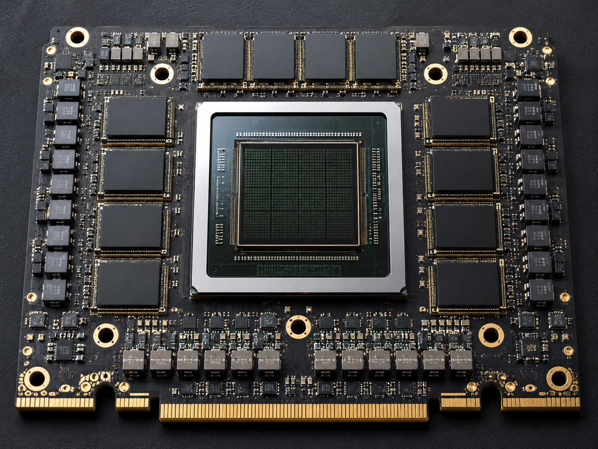
AI加速卡实物：中间大方块是GPU die，周围黑色方块是HBM堆栈
SK海力士 (000660.KS)：62%份额 — 从老大到霸主
怎么赚钱： MR-MUF工艺 → 12层良率最高 → 最早通过NVIDIA HBM3E认证 → NVIDIA约90%的HBM采购来自SK海力士 → 独家供应 = 议价权 = 超额利润。HBM收入从2022年约$1B增长到2025年$20B+，2026年预计$25B+。HBM毛利率估算50-60%（普通DRAM约30-40%）。2025年净利润创历史新高，首次超越三星成为全球最大DRAM厂。
护城河有多深： 四层叠加——①MR-MUF工艺自研，竞争者需从零搭建产线+供应链；②NVIDIA认证周期12-18个月，期间对手拿不到订单；③HBM4的Base Die交给台积电5nm代工，后进者不仅要追赶存储工艺，还要说服台积电给产能；④预售模式，2026年产能已被客户用保证金锁完。
风险： 份额可能从62%降到~40%（Bloomberg Intelligence 2033年预测），但市场规模从$22B增长到$130B → 份额降但收入仍大幅增长。最大风险不是竞争，是AI需求不及预期。
美光 (MU)：21%份额 — 从nobody到老二
怎么赚钱： 跳过HBM3直接做HBM3E → 弯道超车。打入NVIDIA H200和B200供应链，份额从7%三倍跳升到21%。2025年12月宣布退出消费级内存，全力AI——战略all in。
护城河： ①621项HBM相关专利，特别是混合键合和沟槽冷却——这是HBM5时代（2028+）的技术储备；②美国本土唯一HBM产能，地缘政治加分（美国政府和军方的AI项目可能要求美国制造）；③技术路线灵活，不被单一工艺绑定。
风险： 份额最小，规模效应不如SK海力士。TCB工艺仍是短板，12层以上良率待观察。All in AI意味着如果需求放缓没有退路。
三星 (005930.KS)：17%份额 — 从霸主到老三
发生了什么： 2024年HBM3E多次未通过NVIDIA认证——TCB工艺12层良率不达标、功耗超过验收标准。份额从39%暴跌到17%，一年腰斩。2025年主要还在卖上一代HBM3。
翻身机会： ①HBM4首家商业出货（2026年2月）——抢时间窗口；②与AMD签HBM4供应MOU——不只押NVIDIA一家；③IDM全链条，Base Die自己做（不需要台积电），成本可能更低；④1c nm DRAM制程据称更先进。Counterpoint预测如HBM4认证成功份额可回30%+。
风险： 如果HBM4再出良率问题，市场信心可能彻底崩塌。TCB工艺的物理劣势在16层时会更明显。
竞争的本质 ：HBM市场不是价格竞争——产能全部售罄，谁都不用降价。竞争的核心是认证 ——通过NVIDIA/AMD的产品认证才能出货。技术路线判断、良率控制、客户关系决定一切。
环节四：CoWoS封装 — 台积电独家垄断
台积电 (TSM) 做的事：把GPU和多颗HBM拼到同一块硅中介层上（CoWoS），是全球唯一能大规模量产的厂商。
怎么赚钱： 独家垄断 → 定价权极强。产能2024年~40K WPM → 2026年~130K WPM（翻3倍仍供不应求）。NVIDIA锁定60%+产能。Google TPU因产能不够从400万颗砍到300万颗。
~40K→130K
CoWoS月产能（WPM）
2024→2026，翻3倍仍不够
60%+
NVIDIA锁定比例
其余被AMD/Broadcom/Google争抢
护城河： ①5000mm²硅中介层制造，别家良率做不到；②NVIDIA/AMD/Broadcom/Google全依赖它；③HBM4 Base Die代工——从「封装商」变成「HBM供应链的核心节点」；④日月光（ASE）和Amkor在追赶，但产能是零头，良率差距明显；⑤亚利桑那封装厂2029年投产——地缘风险部分对冲。
风险： 台海地缘政治——这是最大的非经营风险，也是唯一实质性风险。
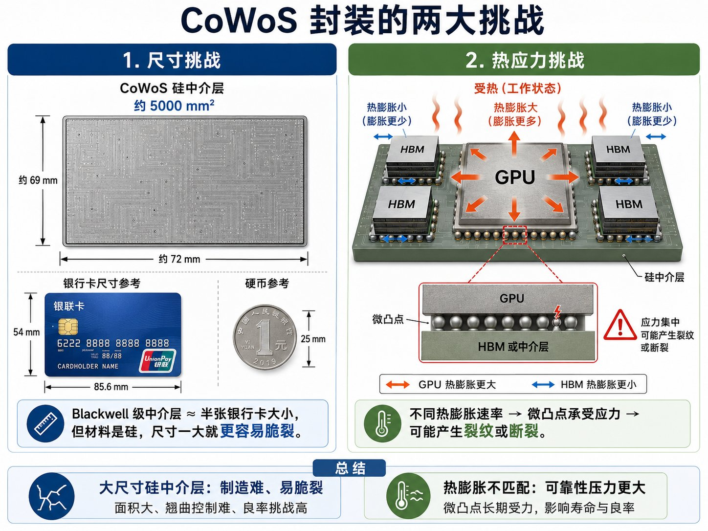
CoWoS两大物理挑战：5000mm²硅片易碎 + GPU/HBM热膨胀不匹配
环节五：采购与集成 — 谁在买HBM，怎么分配
NVIDIA — 最大买家，不生产但控制产能。 HBM总采购量的约70-80%流向NVIDIA。锁定60% CoWoS + 90% SK海力士HBM → 它不是供应商，但它的产能分配权决定了所有人的命运。AMD和Broadcom能拿到多少芯片，取决于NVIDIA用剩多少。
AMD — 第二大买家。 MI300X/MI350X用HBM3E。和三星签了HBM4 MOU——有意扶持三星对抗SK海力士+NVIDIA联盟。和通富微电合作封装，不完全依赖台积电。
Google / Meta / Amazon / Microsoft — 自研ASIC芯片。 Google TPU、Meta MTIA、Amazon Trainium全部需要HBM。这些ASIC由Broadcom设计，台积电代工+封装。Goldman Sachs预测ASIC芯片的HBM需求将暴增82% → HBM的需求来源在多元化，不只是NVIDIA。
环节六：设备和材料 — 卖铲子的人
不管谁赢HBM争霸，这些公司都赚钱。每个环节1-2家公司垄断 → 定价权强。客户是三巨头 → 需求确定性高。HBM层数越多（8→12→16→20）→ 每个环节的价值量都在增加。
类别
公司
做什么
地位
设备
Applied Materials (AMAT)
TSV蚀刻+填铜
准垄断
设备
Lam Research (LRCX)
TSV蚀刻（与AMAT竞争）+ 沉积
主要竞争者
设备
DISCO (6146.T)
晶圆减薄
65%市占
设备
ASMPT (0522.HK)
TCB键合设备
市占最高
设备
BESI (荷兰)
混合键合设备
下一代领先
设备
Advantest (日本)
电性能测试
50-60%市占
材料
长濑化学（日本）
GMC模塑封料
SK海力士主供
材料
信越化学（日本）
散热界面材料
全球第一
材料
联瑞新材 (688300.SH)
Low-α球硅粉
层数越多越需要
材料
雅克科技 (002409.SZ)
HBM前驱体
三巨头都供
钱怎么流动的
钱从上往下流——最终用户（Microsoft/Google/Meta/Amazon）花钱买AI服务器 → NVIDIA/AMD花钱买CoWoS封装+HBM → 台积电和SK海力士/三星/美光花钱买设备和材料 → Applied Materials/DISCO/Advantest/长濑化学。
但定价权从下往上走 ——最终用户有钱但买不到货 → NVIDIA分配产能 → 台积电决定封装排期 → SK海力士决定HBM给谁 → DISCO的减薄设备排单排到两年后。每一层都是「大玩家提前锁产能，小玩家排队等」。
评估这条产业链的三个维度 ：需求看天花板（$2B→$130B，CAGR 42%，至少到2033年）；技术门槛看护城河（MR-MUF vs TCB决定了62% vs 17%，CoWoS独家垄断）；产能看供给约束（预售锁定+设备排单）。需求增速最好算但最没用——所有人都知道HBM需求大。技术门槛最难判断但最值钱。产能约束决定了短期1-2年的业绩弹性。反面同样成立：如果AI需求不及预期（回顾Sequoia警告的$600B capex vs $100B收入缺口），这条产业链的每一环会同时受冲击——需求下降时，定价权从下往上消失的速度和从上往下传导的速度一样快。
Market
HBM产业链相关企业
本文提到的所有上市公司的周线K线图、关键事件和企业档案。分两组：HBM核心产业链（DRAM三巨头+GPU+封装）和设备材料供应链（减薄/键合/测试/材料）。K线图由TradingView提供，数据可能有延迟。仅作产业事实参考，不构成任何投资建议。
HBM核心产业链
核心企业 K线图 + 事件标注
SK海力士
三星电子
MU 美光
NVDA 英伟达
TSM 台积电
HBM设备与材料供应链
设备材料企业 K线图 + 事件标注
DISCO 迪思科
ASMPT
Advantest 爱德万
TER Teradyne
BESI
赛腾股份
信越化学
Resonac
英维克
长濑化学
开篇
Q1 现状
使用量
企业支出
产业结构
矛盾汇聚
Q2 钱的流向
产业全景
硬件为何贵
$20拆解
利润池结论
Q3 持续性
需求轨迹
泡沫检验
Q4 怎么选
三维度
公司对比
时机与陷阱
Q5 个人行动
你在哪
学习与好奇
拥抱
使用与创造
AI基础设施投研框架
围绕五个核心问题，从第一性原理拆解AI产业的现状、利润流向与持续性。
五个问题
Q1 AI发展到了什么阶段？ Q2 钱流向了哪里？ Q3 这能持续吗？ Q4 谁在赚钱、凭什么？ Q5 个人该怎么办？
Question 1
AI发展到了什么阶段？
大多数人对AI的感受是两个极端——要么觉得「已经无处不在」，要么觉得「好像跟我没关系」。这两种感受都是对的，只是看的角度不同。从三个视角同时观察同一个事实，才能拼出完整画面。
本章要解决的问题
AI发展到了什么阶段？现在入场是太早还是太晚？
有多少人在用AI？10亿月活意味着什么？
企业砸了多少钱？$645B是什么概念？
AI的利润结构和Cloud成熟态有什么区别？这说明了什么？
使用量、支出、利润结构三个视角叠在一起，指向什么结论？
要分析AI产业的投资机会，第一步不是看谁涨了多少，而是搞清楚现在到底走到了哪一步。一个产业在不同阶段，投资的逻辑完全不同——就像2000年的互联网和2010年的互联网，虽然都是「互联网」，但一个在铺光纤，一个在收广告费。
三个视角：使用量告诉我们「有多少人在用」，企业支出告诉我们「有多少钱在投」，产业结构对比告诉我们「钱在哪一层被赚走了」。
视角一
使用量：规模已大，但深度极浅
ChatGPT月活10亿，已经是现象级产品。但放进全球应用的坐标系里，它刚超过垂直类APP；真正付费的人不到全球人口的千分之三。用的人多，付钱的人少——渗透的是注意力，还没渗透到钱包。
全球应用渗透率坐标系
全球80亿人，约40亿人上网。在这40亿人里，应用的渗透率分三个梯队：
梯队
代表应用
周活用户
特征
基础设施级 YouTube · Chrome · WhatsApp
~25-30亿
接近天花板（40亿网民的70%+），增长空间有限
社交平台级 Facebook · Instagram · TikTok
~15亿
已进入成熟期
垂直应用级 Spotify · Amazon · 新闻类APP
~2-5亿
各自领域的头部
ChatGPT —
月活~10亿
刚超过垂直应用级，但绝大多数是免费用户
10亿月活已经是了不起的数字——ChatGPT用两年走完了Instagram用六年才走完的路。但两个限定决定了它的商业深度：第一，绝大多数是免费用户，真正付费的不到3000万；第二，10亿月活对比YouTube的30亿周活，AI应用在用户规模上刚进入「垂直应用级」到「社交平台级」之间的过渡地带。
付费渗透率：千分之三
每个方块 ≈ 320万人 · 2500个方块 = 81亿人类 · 2026年
84%的人从未用过AI。付费用户不到全球人口的千分之三。使用Agent产品（Claude Code、Cursor等）的人在这张图里几乎看不见。
从使用量视角看，AI的用户规模增速是历史最快的，但商业化深度还很浅——付费渗透率大约相当于2007年的智能手机（iPhone刚出来，很多人见过但没买）。斯坦福AI超级周期课程的讲师也观察到同样的现象：用户量已经爆发，但从付费渗透率看，商业化才刚刚开始。
数据来源：DataReportal Digital 2026 · 斯坦福 MS&E AI超级周期经济学课程 · Altimeter Capital
视角二
企业支出：已经是天文数字
虽然用户渗透率还在早期，但企业的钱已经砸下去了——AI基础设施的年度资本开支$645B，仅次于美国国防预算，超过全球油气、医药、太空。
这张图来自斯坦福AI超级周期课程。五大巨头（Amazon、Microsoft、Alphabet、Meta、Oracle）2026年AI资本开支合计$645B，三年前还不到$200B——三年涨了三倍，而且趋势没有停下来。
$645B
五大巨头2026年AI资本开支
Altimeter / 各公司IR
3x
三年增幅（2023→2026）
$200B → $645B
5x
AI收入同期增幅
2024-2026 · Altimeter
一个关键对照：开支涨了3倍，AI收入涨了5倍。收入增速跑赢开支增速，这和2000年互联网泡沫时"开支暴增但收入不涨"的情况有本质区别。Anthropic每年收入10倍增长，OpenAI也在快速增长——钱不是在烧掉，是在产生回报。
斯坦福课程的讲师（Altimeter Capital合伙人）观察到一个有趣的类比：20年前亚马逊建AWS时，每次财报会都被问「你投这么多钱会不会破产」。现在的AI巨头也面临同样的问题。但云计算后来的需求证明了当年的投入是值得的。
区别在于：当年亚马逊一家在赌，现在是五家最有钱的公司同时在赌。要么全错，要么这确实是一个基础设施大周期。
数据来源：斯坦福 MS&E AI超级周期经济学课程 · Altimeter Capital · Goldman Sachs · 各公司 Investor Relations
视角三
产业结构：AI的钱在「反着」流
Cloud时代是倒三角——应用层拿走大头（$600B），半导体层只拿$80B。AI时代是正三角——半导体层拿$300B，应用层只有$60B。结构完全相反，说明AI还在建设期。
这张图是理解AI现状最直观的一张。左边是Cloud时代成熟后的收入分布：应用层（Salesforce、Adobe等）拿走$600B，基础设施层（AWS、Azure）$300B，半导体层（AMD、Intel）只有$80B。这是一个倒三角——越靠近用户的层级，收入越大。
右边是AI时代当前的收入分布：完全反过来。NVIDIA一家就拿走$300B，Infra层$75B，应用层（OpenAI、Anthropic）只有$60B。这是一个正三角——越靠近底层硬件，收入越大。
这意味着什么？ 每一次技术革命都经历从「正三角」到「倒三角」的演变。PC时代，先是Intel和微软拿大头，后来变成Google和Facebook。移动时代，先是高通和苹果硬件拿大头，后来变成字节跳动和Uber。
AI现在的正三角结构，说明它还在「铺基础设施」的阶段——类似于2005年的云计算、2008年的移动互联网。应用层的爆发还没来。
利润结构的演变速度
这张图展示了利润结构正在演变，但速度比Cloud时代慢得多：
层级
AI · 2024
AI · 2026
Cloud成熟态
趋势
半导体层（Semis） 87%
79%
6%
在下降，但仍占绝对主导
基础设施层（Infra） 10%
14%
24%
缓慢上升
应用层（Apps） 3%
7%
70%
从3%到70%还有10倍空间
2024年半导体拿走87%的利润，到2026年降到79%——两年只降了8个百分点。对照Cloud成熟态，半导体最终只拿6%。这意味着AI的利润结构距离成熟态还有很远的路要走。
换个角度看：应用层从3%涨到7%，翻了一倍多。但距离Cloud成熟态的70%，还有10倍的空间。这个空间就是未来十年AI应用层公司的增长来源。
数据来源：Altimeter Capital · 斯坦福 MS&E AI超级周期经济学课程
三个视角汇聚
矛盾才是最重要的信号
三个视角同时指向一个事实，但方向看似矛盾：用户渗透率在早期（视角一），资本支出已经是天文数字（视角二），利润结构和成熟态完全相反（视角三）。这个矛盾本身就是答案。
把三个视角叠在一起看
84%的人从未用过AI，付费用户不到千分之三——就这个程度的需求，已经让五大巨头每年砸$645B，NVIDIA年收$300B，HBM全部预售，55-67%数据中心因电力审批卡住。
需求端才走了不到两成，供给端已经满载。利润的87%还堆在半导体层，应用层才分到3%-7%。
这不是猜测，是三组独立数据源（用户统计、企业财报、利润分布）同时指向的同一个事实。
这个矛盾告诉我们，AI正处在一个非常特殊的阶段——大规模基建期 。类比历史：
特征
互联网 1998-2002
Cloud 2006-2012
AI 2024-2026
基建投入 铺光纤$65B
AWS/GCP建数据中心
$645B/年，三年3倍增速
用户渗透率 全球5%在线
企业上云~10%
AI付费用户0.3%
利润集中在 Cisco/Lucent（设备商）
AWS/硬件
NVIDIA/半导体层（87%→79%）
后来利润转移到 Google/Facebook/Amazon（应用层）
Salesforce/Adobe/SaaS（应用层）
？（应用层目前只占3-7%）
每一次技术革命的早期，利润都集中在基础设施层。然后随着基础设施铺完，利润逐步转移到应用层。AI现在的利润结构（半导体79% vs 应用7%）和Cloud成熟态（半导体6% vs 应用70%）之间的距离，就是这个产业接下来十年的演变空间。
这也意味着：现在的投资窗口取决于你相信AI处于这个周期的哪个位置。 如果你认为基建还远没有结束（16%渗透率、供不应求），那基础设施层的确定性最高。如果你认为基建即将完成，那应该开始看应用层。
确认点 #1
AI处于大规模基建期。三个独立视角交叉验证：用户渗透率不到两成（早期），企业资本开支$645B/年且三年3倍（巨量投入），利润87%集中在半导体层（和成熟态的6%完全相反）。这个阶段的特征是：基础设施层确定性最高，应用层爆发还没来但空间最大。后续所有分析都建立在这个锚点之上。
Question 2
$645B花下去了，钱流向了哪里？
确认点#1确立了AI处于大规模基建期。下一个问题：这些钱沿着什么路径流动？谁拿到了利润？为什么是他而不是别人？回答这个问题需要先看清AI产业的完整结构。
本章要解决的问题
$645B沿着什么路径流动？谁拿到了利润？为什么是他？
AI产业有几层？每层做什么？谁是关键玩家？
一颗GPU为什么要几万美元？背后的成本链条长什么样？
用户付$20给Claude，每家公司分到多少净利润？
什么决定了利润分配——是重要性，还是别的什么？
Q1告诉我们「有多少钱在投」，但没有回答「钱投到了哪里」。$645B的资本开支不是一笔转账，而是沿着一条很长的价值链逐层传递——从用户付费，到应用层，到算力，到芯片，到制造，到能源。每经过一层，都有人截留一部分利润。
要理解利润的流向，先要看清产业的完整地图。这里用两个视角来看同一个产业：一个是按产业环节拆的「八层框架」，一个是按物理传导链推的「四力模型」。前者告诉你有哪些参与者，后者告诉你为什么必须有这些参与者。
视角一
产业全景：两张地图看同一个产业
八层框架是「描述性」的——产业里有哪些环节、有哪些公司。四力模型是「解释性」的——为什么必须有这些环节、需求如何传导。两张地图叠在一起，才能既看到全貌又理解因果。
地图一：八层产业框架
这张图来自斯坦福课程讲师的整理，把AI产业从底到顶拆成8层，每层再分云端、端侧、物理AI三条线。几个关键观察：
层级
做什么
瓶颈程度
关键玩家
L1 能源 给数据中心供电
物理瓶颈 ★
Constellation · Vistra · GE Vernova · Tesla · CATL
L2 制造 生产芯片
物理瓶颈 ★
TSMC（先进制程5nm以下占90%）· Samsung Foundry · Intel 18A
L3 存储 HBM / DRAM / NAND
物理瓶颈 ★
SK Hynix (50%) · Samsung (30%) · Micron (20%) — 三家垄断HBM 100%
L4 芯片+互联 GPU + NVLink + 光模块
高
NVIDIA · AMD · Broadcom · 端侧: Qualcomm · Apple · MTK
L5 算力服务 Cloud + NeoCloud
中
AWS · Azure · GCP · CoreWeave · Lambda
L6 数据 训练数据 / 具身数据
中
Google · Meta · Tesla FSD（100亿英里）· Waymo
L7 模型 Foundation + 编排
低
OpenAI · Anthropic · Google · 端侧: Apple · Qualcomm
L8 应用+执行 Agent编排 / 工具调用
低
OpenAI · Anthropic · MSFT · 物理AI: Tesla · Anduril · Waymo
图里标了三颗星（★）的层级——能源、制造、存储——是物理瓶颈层。物理瓶颈的特征是：不是写代码能解决的，需要建厂、培训工人、审批电力，扩产周期以年计。这三层的瓶颈决定了上面所有层的天花板。
斯坦福课程的一句总结很精准：「短期缺芯片，长期缺能源，永远缺存储」 。
地图二：四力传导模型
八层框架告诉你「有什么」，但没有解释「为什么」。四力模型从物理因果链来看同一个产业：
四力模型把8层压缩成4个力，核心逻辑是：需求从右到左倒逼（用户要Agent → Agent要算力 → 算力要芯片 → 芯片要电力），供给从左到右约束（电力不够 → 芯片产不出 → 算力不够 → Agent跑不动） 。
两张地图的关系： 八层框架是「组织架构图」——告诉你公司在哪一层。四力模型是「因果关系图」——告诉你哪一层卡住了会影响所有人。投资分析时两张地图配合使用：用八层框架定位公司，用四力模型判断瓶颈和传导方向。
视角二
为什么AI硬件这么贵？
一颗GPU看起来是一个芯片，但它背后是一整套存储层级——从脑袋里的cache到手边的HBM到书架上的DRAM到地下室的SSD。每一层都在花钱，每一层都有瓶颈。
很多人看到NVIDIA一颗H100/B200的价格（$25,000-$40,000+），第一反应是「芯片怎么这么贵」。但GPU不是单独工作的，它需要一整套存储和互联系统配合。斯坦福课程用了一个研究员团队的类比来解释：
想象1000个研究员要在三个月内把地球上所有的书读一遍，写成一份报告——这就是训练一个大模型的过程。每个研究员就是一颗GPU：
类比
实际组件
特征
瓶颈？
研究员脑袋 ——正在思考的内容SRAM / Cache
极快 · 极小
不是主要瓶颈
手边的桌子 ——当前在用的几本工具书HBM（高带宽内存）
极快 · 中等容量 · AI GPU专用
核心瓶颈 — 三家垄断
书桌旁的书架 ——这周要用的书DRAM（动态内存）
快 · 大
有压力
同房间的研究员 ——72人一间NVLink（机柜内互联，1.8 TB/s）
几乎即时通话
NVIDIA独有技术
楼内其他房间 ——对讲机通话光模块（机柜间互联，800 Gb/s）
快但有延迟
需求暴增
其他城市的图书馆 ——跨城市快递光纤网络（跨数据中心）
延迟高 · 速度慢
成本高
地下储藏室 ——全部书的存档NAND / SSD（闪存硬盘）
慢 · 极大
最近也开始涨价
关键洞察：看起来你买的是一颗GPU，但实际上你在为整条链付费——GPU本身、手边的HBM、书架上的DRAM、机柜间的光模块、跨数据中心的光纤、地下室的SSD。任何一环短缺，整个系统都跑不起来。
这就是为什么「短期缺芯片，长期缺能源，永远缺存储」——随着模型越来越大、上下文越来越长、Agent的记忆越来越多，存储的需求只会持续增长。HBM之所以成为核心瓶颈，是因为它是「手边的桌子」——离GPU最近、速度最快、但容量有限且只有三家能做。
来源：斯坦福 MS&E AI超级周期经济学课程 · Crucible CEO分享
视角三
你付的$20，每家公司赚了多少？
从用户视角看利润的流向：你每月付$20给Claude或ChatGPT，这笔钱沿着八层框架逐层分配。最后只有$6.90变成了各家公司的净利润，剩下$13.10是运营成本和研发。
前面的产业地图和存储层级是静态的结构图。现在换一个动态视角：跟着一笔真实的钱，看它怎么从用户口袋流到每家公司的利润表里。
这棵树的逻辑：你付$20给Anthropic（Claude），Anthropic毛利70%留下$14，其中净利润$4。剩下的$6交给算力提供方（AWS/NeoCloud）。算力方从$6中抽走$0.90净利润，把$3给NVIDIA买GPU。NVIDIA毛利75%、净利50%，赚走$1.50。剩下的$0.75继续分给台积电、ASML、HBM三家、光模块厂商、ODM组装厂。
每家公司的利润排名
把利润树展开成排名表，几个观察：
排名
公司
从$20中赚的净利润
占$20比例
八层/四力位置
1
Anthropic （模型+应用层）$4.00
20%
L7+L8 / 智力+能力
2
NVIDIA （芯片层）$1.50
7.5%
L4 / 算力
3
AWS/NeoCloud （算力服务）$0.90
4.5%
L5 / 算力
4
台积电 （制造层）$0.157
0.8%
L2 / 电力
5
电力公司 （能源层）$0.12
0.6%
L1 / 电力
6
SK Hynix/Micron （存储层）$0.105
0.5%
L3 / 算力
7
光模块厂商 （互联层）$0.042
0.2%
L4 / 算力
8
ASML （光刻机）$0.025
0.1%
L2 / 电力
合计净利润 $6.90 34.5% —
其余（运营成本+研发）
$13.10
65.5%
—
三个关键发现
发现一：模型公司单笔赚最多，但竞争格局未定。 Anthropic从每$20中净赚$4，是NVIDIA的2.7倍。但这建立在毛利70%的基础上——2024年时毛利只有38%，两年内从$7.6提升到$14。模型层的议价权在快速提升，但OpenAI、Anthropic、Google三家的竞争还远未结束。
发现二：NVIDIA和台积电是「不管谁赢都赚钱」的位置。 不管用户付钱给Claude还是ChatGPT还是Gemini，GPU和芯片制造的需求不变。NVIDIA净利率50%，台积电净利率55%，两家合计从每$20中拿走$1.66——而且是「无论应用层谁胜出都拿」的利润。这就是「卖铲人」逻辑。
发现三：利润浓度和产业位置不成正比。 HBM三家（SK Hynix/Samsung/Micron）垄断100%的HBM供给，但从$20中只赚$0.105。能源和制造是最底层的物理瓶颈，但利润率低。瓶颈 ≠ 利润丰厚。真正的高利润来自两个条件同时满足：不可替代（护城河）+ 高议价权（定价能力） 。NVIDIA和模型公司同时满足，台积电满足前者但定价相对克制，HBM三家满足前者但竞争导致利润被压。
数据来源：斯坦福 MS&E AI超级周期经济学课程 · Altimeter Capital · 利润率数据基于各公司最新财报
Q2 总结
利润池的形状
$20的旅程揭示了一个关键事实：利润的分配不是按「重要性」排的，是按「不可替代性 × 议价权」排的。理解这两个变量的组合，比记住谁赚多少更重要。
把Q2的三个视角叠在一起，利润池呈现出一个清晰的形状：
位置
不可替代性
议价权
利润特征
模型/应用层 （Anthropic, OpenAI）中（三家竞争）
极高（直接向用户收费）
单笔利润最高，但格局未定
芯片设计 （NVIDIA）极高（CUDA生态锁定）
极高（毛利75%）
最稳定的高利润——不管谁赢都赚
算力服务 （AWS/NeoCloud）低（多家竞争）
中
利润尚可但竞争激烈
制造 （TSMC）极高（先进制程90%）
高
利润率高但单笔金额小
存储 （SK Hynix等）高（三家垄断HBM）
中（三家互相竞争）
瓶颈但利润不如预期厚
能源 （电力公司）高（物理刚需）
低（受监管）
量大但利润率最低
确认点 #2
$645B沿着八层价值链逐层传递。用户付$20，最终$6.90变成各家公司的净利润。利润分配的决定因素不是「谁最重要」而是「不可替代性 × 议价权」的组合——NVIDIA和模型公司两项都高所以利润最厚，HBM虽然是物理瓶颈但三家竞争压薄了利润，能源是刚需但受监管利润率最低。理解这个公式，比记住具体数字更有用：后续的企业分析和赛道选择，都是在这个利润池地图上找坐标。
Question 3
这能持续吗？
Q1和Q2确认了两件事：AI处于大规模基建期，利润沿八层价值链分配。但"现在大"不等于"以后还大"。这个问题要拆成两个独立命题：需求会不会消失？即使需求真实，价格会不会崩？
本章要解决的问题
AI基建期能持续多久？会不会重演2000年互联网泡沫？
过去三年有没有需求逆转的信号？增速放缓意味着什么？
需求真实就等于价格合理吗？2000年的教训是什么？
不同层级的泡沫风险一样吗？基础设施层和应用层有什么区别？
整个层级没有泡沫，层级内的具体标的会不会被淘汰？
很多分析把「需求能不能持续」和「估值是不是泡沫」混在一起讨论。但2000年互联网已经证明：需求可以完全是真的（用户从3.6亿涨到50亿），价格照样崩78%。所以必须分开回答。
命题一
需求会消失吗？
与其论证「需求不会消失」，不如看轨迹——过去三年发生了什么，每一个节点是在加速嵌入物理世界，还是在退潮。
2022.11
ChatGPT发布 ，100天破1亿用户——人类历史上最快
2023.03
GPT-4发布 ，多模态能力跳变，企业开始认真评估AI
2023-2024
HBM供不应求 ，SK Hynix产能预售锁定，TSMC CoWoS满载
2024
NVIDIA数据中心年收入突破 $100B ，AI收入开始5倍增速
2024-2025
Agent时代开启 ——Claude Code、Cursor、Devin，AI从聊天工具变成数字劳动力
2025
Anthropic年收入连续 10倍增长 ，OpenAI年化收入超$10B
2025-2026
55-67%数据中心卡在电力审批 ，单AI集群耗电 = 中型城市（休斯敦）
2026
ChatGPT月活 10亿 ，AI开始嵌入Office、手机系统和企业工作流，但大量传统企业仍未接触AI
2026
五大巨头AI资本开支 $645B ——三年涨3倍，且趋势未停
2026
HBM三家产能全部预售，NVIDIA年收$300B ，AI占美国新增电力需求50%
这条时间线上没有一个节点在逆转。产品节点从聊天工具进化到数字劳动力，资本节点每年倍增，物理节点从「短缺」走向「更短缺」。需求要下降，意味着这三条线必须同时掉头——10亿月活用户停止使用，五大巨头同时削减capex，物理供给突然过剩。这个组合的概率极低。
增速一定会放缓，但放缓不等于崩盘
需求不会消失，但增速一定会降。这是所有产业的规律，AI不例外。关键问题是：从多少降到多少，在什么基数上。
以HBM为例：Bloomberg预测市场从2024年$22B → 2033年$130B，年化增速~25%。增速从100%降到25%，但绝对量翻了6倍。$130B的25%增长（每年+$32B）比$22B的100%增长（每年+$22B）创造更多绝对价值。
增速放缓影响的是估值倍数，不是行业生死。 对投资者来说，区分「增速从100%降到30%」和「增速从正变负」是完全不同的判断——前者影响的是买入价格，后者影响的是是否该买。
确认点 #3
需求不会消失。时间线上每一个节点——产品、资本、物理——都在加速嵌入，没有逆转信号。增速会从100%降到20-30%，但在$645B的基数上，每年仍新增超$100B。增速放缓影响估值倍数，不影响行业方向。
命题二
需求真实 ≠ 价格合理
2000年互联网需求完全是真的——用户从3.6亿涨到50亿。但纳斯达克跌了78%，用15年才回来。需求真实和估值合理是两个独立命题。
泡沫需要两个条件同时满足
条件
定义
检验方法
条件一：价格脱离基本面 估值隐含的增长预期，远超实际能兑现的水平
P/E反推隐含增速 vs 实际增速
条件二：买入动机脱离价值 买入是为了转手卖给下一个人，而非使用价值
买方是终端用户还是投机者
2000年 vs 2026年
维度
2000年互联网
2026年AI基础设施
投资主体 高杠杆电信公司借钱铺光纤 → 现金流断裂 → 连锁违约
五大巨头合计自由现金流$200B+，不会因AI ROI不及预期倒闭
供需状态 铺了$65B光纤，只用了5-15% → 严重过剩
HBM全部预售，CoWoS满载，55-67%数据中心卡在电力 → 严重短缺
估值水平 Cisco P/E ~200x，Yahoo ~1200x
基础设施层P/E 8-36x，模型层估值高但收入10倍增长中
收入趋势 大量公司零收入，烧钱上市
NVIDIA净利率50%，AI收入三年5倍增长，Anthropic连续10倍
泡沫是分层的
用Q2的八层框架逐层检验，不同层级的泡沫特征差异很大：
层级
供需
盈利
泡沫特征
基础设施层 （L1-L4：能源/制造/存储/芯片）供不应求
大幅盈利
特征最少
算力服务层 （L5：Cloud/NeoCloud）需求旺盛但竞争加剧
盈利但利润率承压
中等——部分新云估值偏高
模型层 （L7：OpenAI/Anthropic/Google）竞争激烈
高收入但多数亏损
估值隐含「成为下一个Google」，不一定都能兑现
应用层 （L8：AI SaaS创业公司）极度分散
大量无收入
特征最多——和2000年的Pets.com更像
层级不是泡沫，不代表层级内的标的不会被淘汰。 斯坦福课程中，Crucible CEO被问到看空机会时指出：现在大家追捧的变压器、插座、施耐德等能源基础设施，应该从第一性原理想5-10年后的能源结构——新型发电方式（固体燃料电池、小型核能）可能让现在的部分基础设施过时。「现在受追捧不代表未来还需要你。」基础设施层整体泡沫特征最少，但具体标的仍需要用第一性原理判断其长期价值。
关于回调风险： 即使基本面不是泡沫，大幅回调仍然可能发生——某季度业绩不及预期、某巨头削减capex、宏观衰退都可能触发。但回调和泡沫破裂是不同的事件：2000年跌78%用15年回来，基本面健康的回调通常1-2年修复。区分的关键：回调之后基本面是否还在增长。
确认点 #4
需求真实 ≠ 不是泡沫，但2026年AI基础设施层与2000年有本质区别：投资主体是现金流最强的公司，供给是短缺而非过剩，核心标的在大幅盈利。泡沫是分层的——基础设施层（L1-L4）特征最少，应用层（L8）特征最多。用八层框架定位层级，用两个条件逐层检验，而非笼统判断「AI是不是泡沫」。
Question 4
怎么评估一家AI产业链公司？
Q1-Q3确认了三件事：AI在基建期、利润沿价值链分配、能持续。下一个问题：面对八层框架里几十家公司，用什么标准来判断谁值得关注？不是推荐标的，而是给一个可复用的筛选工具。
本章要解决的问题
面对八层框架里几十家公司，用什么标准判断谁值得关注？
评估一家公司应该看哪几个维度？怎么量化？
为什么三个维度全高的公司几乎不存在？
NVIDIA、台积电、Anthropic放进框架里，各自的短板在哪？
资本该追什么逻辑——通胀、共识还是生产力？
什么时候从基建期转向应用期？什么信号可以观察？
哪些看起来火热的公司其实是过渡产品？
斯坦福课程的讲师提出了三个维度来评估AI产业链中的公司。这三个维度不是独立打分，而是组合使用——一家公司的投资价值取决于三者的交集。
框架
三个维度：成长空间 × 利润获取 × 不可或缺性
成长空间决定天花板有多高，利润获取决定能赚多少，不可或缺性决定能赚多久。三个维度同时高的公司最少，也最值得关注。
维度一：成长空间 — 天花板在哪里
Q1已经给了一个坐标系：AI应用层利润占比从3%到7%，Cloud成熟态是70%——还有10倍空间。但不同层级的天花板差距很大：
层级
当前规模
天花板参照
空间判断
模型/应用层 （L7-L8）AI应用收入$60B
Cloud应用层$600B
~10倍
算力服务层 （L5）AI Infra收入$75B
Cloud Infra $300B
~4倍
半导体层 （L2-L4）AI半导体$300B
已是Cloud半导体的3.75倍
取决于基建期长度，空间不靠对标
存储层 （L3 · HBM）$35B（2025）
$100-130B（2028-2033）
~3-4倍
能源层 （L1）AI占美国电力2%
预计2030年占10-15%
~5-7倍，但利润率低
成长空间最大的是应用层（10倍），但Q2已经证明应用层现在的利润占比最低、竞争最分散。成长空间大 ≠ 现在就能赚钱，需要结合第二个维度来看。
维度二：利润获取能力 — 能赚多少
Q2的$20拆解已经给了答案。把每家公司的净利率和从$20中的绝对利润放在一起看：
公司
净利率
从$20赚的净利润
利润特征
NVIDIA ~50%
$1.50
利润率最高，且从多个环节抽水
台积电 ~55%
$0.157
利润率极高但单笔金额小（只做制造）
Anthropic/OpenAI ~20%
$4.00
单笔最多，但净利率不如芯片层
AWS/NeoCloud ~15-16%
$0.90
利润尚可但竞争压力大
SK Hynix/Micron ~50%
$0.105
利润率高但分到的总额小
电力公司 ~10%
$0.12
量大但利润率最低
利润获取有两种模式：**高利润率型**（NVIDIA、台积电——每赚一块钱留下一半）和**高绝对额型**（模型公司——直接向用户收费，单笔最多）。两种模式的风险不同：高利润率型怕的是竞争对手出现拉低利润率，高绝对额型怕的是用户不续费。
维度三：不可或缺性 — 能赚多久
这个维度回答的是护城河问题：如果这家公司明天消失，产业会不会停转？供给侧有几家能做同样的事？客户切换的成本有多高？
公司/环节
供给侧替代方案
切换成本
不可或缺性
ASML （EUV光刻机）无
无法切换
绝对垄断
台积电 （先进制程）Samsung Foundry（良率差距大）、Intel 18A（未验证）
极高（重新流片+验证需1-2年）
准垄断（5nm以下90%）
NVIDIA （GPU + CUDA生态）AMD MI系列、Google TPU
高（CUDA生态迁移成本、开发者习惯）
强垄断，但有被挑战的可能
HBM三家 （SK Hynix/Samsung/Micron）三家互为替代
中（需认证但不是独家）
集体垄断，个体可替代
模型公司 （OpenAI/Anthropic/Google）三家互为替代 + 开源模型
低（API切换成本很低）
低——用户忠诚度取决于模型质量，随时可切
NeoCloud （CoreWeave等）多家竞争 + AWS/GCP
中低
低——算力是标准品，谁便宜用谁
不可或缺性最高的是ASML（唯一供应商）和台积电（5nm以下90%），但两者的成长空间和利润获取模式完全不同。不可或缺性最低的是模型层和NeoCloud——竞争激烈，切换成本低。
应用
把框架用起来：典型公司的三维度定位
三个维度不是分别打分然后加总，而是看组合。同时满足三个维度高分的公司极少，大多数公司在某个维度上有明显短板。认清短板比发现优势更重要。
公司
成长空间
利润获取
不可或缺性
短板在哪
NVIDIA 中高（取决于基建期长度）
极强（净利率50%，多环节抽水）
强（CUDA生态锁定）
成长空间受基建期结束时间约束；Google TPU是长期变量
台积电 中（先进制程需求持续但增速有限）
高（净利率55%但单笔小）
极强（5nm以下90%产能）
成长空间受物理扩产速度限制；地缘政治风险
Anthropic/OpenAI 极大（应用层10倍空间）
高（单笔$4，议价权在提升）
低（三家互替，API切换成本低）
不可或缺性——用户随时可能切到更好的模型
SK Hynix 中（HBM $35B→$130B，~4倍）
中（利润率高但分到的总额小）
中（三家集体垄断，个体可替代）
三家竞争压薄利润；Samsung/Micron在追赶
ASML 中低（光刻机市场增速~15%）
高（毛利率~52%）
绝对（EUV唯一供应商）
成长空间受限——光刻机市场本身不大
CoreWeave等NeoCloud 高（从零开始建）
中低（竞争压利润率）
低（算力是标准品）
不可或缺性和利润率都低——当算力不再短缺时最先受压
一个规律： 三个维度全高的公司几乎不存在。NVIDIA最接近，但成长空间受基建期长度约束。模型公司成长空间最大，但不可或缺性最低。台积电不可或缺性最高，但成长空间受物理限制。投资的本质是在三个维度之间做取舍——你在赌哪个维度的权重更大。
这个框架不给答案，给的是提问的方式。面对任何一家AI产业链公司，问三个问题：它的天花板在哪（成长空间）？它凭什么赚钱、能赚多少（利润获取）？如果它消失了谁能替代它（不可或缺性）？三个问题的答案组合在一起，就是这家公司的投资特征。
确认点 #5
评估AI产业链公司用三个维度的组合：成长空间（天花板多高）× 利润获取（能赚多少）× 不可或缺性（能赚多久）。三维度全高的公司几乎不存在——NVIDIA最接近但受基建期长度约束，模型公司空间最大但护城河最浅，台积电护城河最深但天花板受物理限制。框架的价值不在于给出结论，在于帮助识别每家公司的真正短板。
时机与陷阱
资本该流向哪里，不该流向哪里
三维度框架解决了怎么评估一家公司。但还有三个实际问题：手里的钱放在哪类资产上最有效率？什么时候轮到应用层？哪些看起来火热的公司实际上是过渡产品？
本节要解决的问题
在AI产业周期中，资本应该追什么、避什么？
不同资产类别的增长逻辑有什么根本区别？
什么信号标志着从基建期转向应用期？
哪些环节看起来重要，但注定是过渡产品？
观察一：资本配置的三种逻辑
个人观察，不构成投资建议。 以下排序反映的是作者对不同资产类别底层逻辑的理解，每个人的风险偏好、认知边界和资金规模不同，结论会完全不同。加密资产波动极大，AI公司估值处于历史高位，任何决策请基于自身判断。
如果把可选的资产类别按底层增长逻辑排列，会看到一个有意思的梯度：
资产类别
你在追什么
底层逻辑
法币现金/债券 保值
跑不赢通胀，购买力持续缩水——你在和时间赛跑
加密资产（BTC为代表） 共识
抗通胀叙事 + 网络效应——价值来自越来越多人相信它有价值。有真实增益（稀缺性、去中心化、跨境流动），但增长由「共识扩散」驱动，不由生产力增长驱动
AI产业链股权/Token 生产力
直接绑定新一代生产力的创造过程——$645B在建产能 → 算力 → 智能 → 应用。增长由真实的经济产出驱动，不依赖共识扩散
三种逻辑的区别：追通胀是防守，追共识是对人性的押注，追生产力是对物理世界的押注。排列顺序不代表短期收益率高低——加密资产的波动完全可以在短期内远超AI股权回报。这个排序说的是底层增长引擎的差异：法币贬值是确定的，共识扩散是概率性的，生产力增长是可度量的。
一个观察维度：当你评估一项资产时，问自己「它的价值增长依赖什么？」如果答案是「更多人相信」，那是共识资产；如果答案是「真实产出在增加」，那是生产力资产。两者没有绝对好坏，但底层逻辑的差异决定了你该用什么框架去评估它、什么时候该退出。
观察二：基建期→应用期的时机信号
回到Q1确认点#1的结论：AI正处于大规模基建期，87%的利润在半导体层，应用层占比仅3%→7%。这意味着一件事——现在投资应用层公司，相当于在基础设施还没建好的时候押注谁会成为下一个Uber。
逻辑链条如下：
Q1数据 → 时机判断： 2024年AI利润87%在半导体 → 硬件公司吃掉大部分价值 → 应用层公司还没有规模化的利润来源 → 当硬件层利润占比从87%降到50%以下时，意味着应用层开始产生足够利润支撑自己的生态 → 那才是应用层投资从种子期进入成长期的信号。
这个判断不是说应用层公司不值得关注——事实上，成长空间最大的就是应用层（Q4维度一已经确认，从3%到70%有10倍空间）。而是说，在硬件层还在吃掉绝大多数利润的阶段，投资应用层本质上是在做「种子轮」——高风险、高不确定性、高淘汰率。如果你没有种子轮投资人的风险承受力和选择能力，这个阶段更适合观察而非重仓。
具体观察指标：关注每季度财报中AI应用层公司（模型公司、SaaS公司）的利润率变化。当这个群体开始从亏损转为盈利、或利润增速持续超过硬件层时，基建期向应用期的过渡就开始了。
观察三：识别过渡产品——什么不该长期持有
AI产业链中有一类公司特别值得警惕：「脚手架公司」——帮助大模型落地和稳定运行的中间层工具。
这类公司的特点是：今天确实有用，明天可能被模型本身替代。
类别
典型产品
为什么是过渡
Prompt工程工具 prompt管理平台、prompt模板市场
模型越来越能理解自然语言，精心设计prompt的必要性在下降
Agent编排框架 LangChain、AutoGen等工作流工具
当Agent能力足够强，它们会学会自己编排任务，不需要外部框架硬编码流程
模型输出纠错/护栏 幻觉检测工具、输出格式化工具
模型本身的准确率在每代提升，纠错需求随模型进化而缩小
RAG中间层 向量数据库托管、文档分割管道
模型context window不断扩大（GPT-4: 8K → Claude: 200K），长文本能力提升会挤压部分RAG场景
判断一家公司是不是「脚手架」的核心问题：它解决的问题，是模型能力的永久缺口，还是当前模型不够好的临时补丁？
如果答案是后者——即随着模型每一代进化，这个问题在缩小而不是扩大——那么这家公司的护城河在随时间变薄，不管它现在多火。这就是智能革命和传统技术革命的核心区别：AI会学习，当它学会了你的脚手架在做的事，脚手架就不再需要了。
对比之下，什么不是过渡产品？底层算力（GPU、HBM）、基础设施（数据中心、电力）、安全合规（身份验证、审计追踪）——这些是模型无论多强都需要的物理层和制度层，不会因为模型进化而消失。这也回扣了Q1的确认点：基础设施层确定性最高。
三条过滤原则
原则一：投卡脖子的刚需，事件错杀时关注。 从三维度框架看，「不可或缺性」最高的公司就是卡脖子环节——光刻机只有ASML，先进制程只有台积电，HBM只有三家能做，GPU事实上只有NVIDIA。这些公司的需求不依赖某个应用成功与否，而是整条产业链运转的前提。当短期事件（地缘冲突、单季财报不及预期、市场恐慌）导致这类公司股价下跌时，值得格外留意——卡脖子的物理事实不会因为一个季度的波动而改变。
原则二：应用层要用中间产物，但不投中间产物。 应用层的确需要Agent编排、RAG管道、prompt工程这些中间层工具才能跑起来。但「需要使用」和「值得投资」是两件事。中间产物服务的是模型与应用之间的接口，而这个接口随着模型每一代进化在改变——你可以用LangChain做项目，但不该把它当长期资产持有。上面脚手架表里的四类公司全部属于中间产物。
原则三：区分价格上涨是刚需还是炒作——有没有price in太远期的预期。 一个具体的例子：能源基础设施组件——变压器、插座、施耐德（斯坦福AI超级周期课程的讲师明确点名了这个方向）。这些公司近一年股价暴涨，逻辑是「AI吃电 → 电网要扩建」。短期看，电力缺口是真实的。但从第一性原理想：5-10年后能源结构是什么样的？核能、燃料电池、新型发电方式一旦规模化，现在被追捧的传统电网组件可能就不再是瓶颈了。如果价格已经price in了5-10年的需求预期，那你买的不是刚需，而是在为一个可能不会到来的未来买单。同样的逻辑适用于New Cloud（CoreWeave等）——$20拆解中它们拿$6但净利只有$0.9，竞争激烈且不可或缺性低，一旦传统云厂商改造完成，这些公司的位置就不稳了。
确认点 #6
追通胀 → 追共识 → 追生产力，三种资本配置逻辑的底层引擎不同。基建期投应用=种子轮，硬件利润占比降到50%以下才是应用期信号。三条过滤原则：①投卡脖子刚需，事件错杀时关注；②应用要用中间产物，但不投中间产物——脚手架会随模型进化被替代；③区分刚需和炒作，警惕已经price in太远期预期的标的——变压器、插座、New Cloud都可能属于这一类。
Question 5
个人该怎么办？
Q1-Q4是第三人称视角——观察产业、分析利润、评估公司。Q5翻转成第一人称：知道了这一切之后，作为个体，我应该做什么？答案不是「买哪只股票」，而是一个更根本的问题——你自己准备好了吗？
本章要解决的问题
看懂了产业地图，个人如何行动？
我现在处于AI使用的哪个阶段？差距在哪？
面对AI这场大火，姿势应该怎么摆？
怎么用AI才不会变成AI的搬运工？
当执行力被拉平之后，真正的差距来自哪里？
Q1的数据已经给了一个刺眼的事实：84%的人从未用过AI，付费用户不到全球人口的千分之三，使用Agent产品的人在那张2500个方块的图上几乎看不见。工具已经就位，但绝大多数人连第一步都没走出去。
更深层的矛盾是：AI没有让工作变少。经济学上有个现象叫杰文斯悖论——瓦特改进蒸汽机本意是省煤，结果因为效率提高、成本下降，用蒸汽机的场景反而爆发式增长，总耗煤量不降反升。AI正在重演同样的剧本。它把工作中容易糊弄、可以应付的部分烧掉了——那些重复的、机械的、有标准答案的部分。留下来的，恰恰是更难被替代、也更不能逃避的东西：品味、判断、审美、对世界的理解、对自己的诚实。AI让交差变得简单，却让本分变得更难。
所以Q5不教工具，教姿势。具体来说，四个字：学习、好奇、拥抱、使用。
先定位
你现在在哪？——AI使用的四个跃迁
同一个AI，不同人用出来的效果差距可能是一百倍。这个差距不是玄学，是可以定位的。以下框架将AI使用水平分为四个跃迁阶段，每个阶段有明确的标志动作和瓶颈。找到你的位置，才知道下一步该往哪走。
阶段 等级 标志动作 瓶颈在哪
学会提问 Lv.0→3
从没用过AI → 开始追问和补充背景 → 给AI立规矩、写结构化Prompt、分步拆任务
大多数人卡在「觉得AI有时好使有时不好使，说不清为什么」，本质是还没建立起稳定的使用习惯
跨界织网 Lv.4→6
用AI做专业以外的事 → 把AI嵌入日常工作流 → 从ChatBot跨越到Agent
Lv.3→4需要心态跳跃：敢不敢用AI做自己「不会」的事。Lv.5→6需要认知跳跃：AI不只是对话框，它能直接操作你的设备和工具
创造共生 Lv.7→9
开始封装自己的Skill和工具 → 设计AI反馈循环 → AI成为思维方式的一部分，从构思阶段就参与
从「使用者」到「创造者」的身份突变。工作方式已经很难向不用AI的人解释
一人军团与归鞘 Lv.10→11
一个人的产出对标几十人团队 → 但有意识地划定界限：哪些交给机器，哪些必须留给自己
品味和判断力本身也需要维护。如果脱离了亲手劳作的泥泞，最终也会沦为无源之水
等级框架来源：数字生命卡兹克 · Lv.11「执剑人」为作者自拟
一个粗略的观察： Lv.0→3（学会提问）大约覆盖了当前AI用户的大多数。Lv.4（越境者）开始，你已经超越了绝大部分使用者。Lv.6（召唤师）以上的人极少。但等级不是目的，等级之间的跃迁才是——每一次跃迁都不是技巧的升级，而是认知的翻新。从「AI是搜索引擎」到「AI是协作者」到「AI是思维方式的一部分」，底层假设在每一级都在被重写。
注：以上比例为作者基于Q1渗透率数据的粗略估计，非精确统计。
找到你的位置之后，下面三节分别对应三个行动层。不管你现在在哪一级，行动的底层逻辑是一样的：学习、好奇、拥抱、使用。
行动一
学习与好奇——姿势摆正
面对AI，大多数人卡在两个执念上：一是觉得AI不会犯错（所以一旦犯错就失望放弃），二是觉得AI会抢饭碗（所以回避或焦虑）。放下这两个执念，是所有后续行动的前提。
放下两个执念
第一个执念：AI不会犯错。人类也会犯错，人类需要十几年学习，需要法律约束，需要道德束缚。AI是一个概率系统，不是一个确定性函数。它给你的不是「答案」，而是「待验收的中间件」。放下对确定性的执念，你才能真正开始用它。
第二个执念：AI会抢饭碗。AI烧掉的是工作中机械、重复、有标准答案的部分。留下来的——品味、判断、审美、责任、对世界的理解——这些东西AI给不了，也替代不了。与其害怕被替代，不如用AI增强自己，把省下来的时间和精力投入到那些真正属于人的部分。
转变态度：AI不是工具，是协作关系
很多人把AI当搜索引擎用——有问题问一下，来什么接什么。这个态度决定了你永远停在Lv.1。真正的起点是意识到：你和AI之间不是「人使用工具」的关系，而是一种需要设计的协作关系。怎么问比问什么重要。补充背景、给例子、分步拆任务、让AI先列大纲再展开——这些看似是「技巧」，本质是你在设计这段协作关系的规则。
学习和好奇的核心： 不是学会某个AI工具的用法——工具会变，今天的热门明天可能被替代。真正要学的是一种思维模式的转换：从「我要怎么做」变成「我和AI怎么一起把这件事做到最好」。保持好奇心，对世界保持探索欲——Q1的数据告诉我们，AI的应用层还有巨大空间没有被开发，这意味着大量的可能性还没有被想象过。你的好奇心就是发现这些可能性的雷达。
行动二
拥抱——向前试错，向后扎根
面对AI这场大火，人的应对思路有两个方向：向前试错——跟上变化，摸着石头过河；向后扎根——找到不变的东西，顺着历史找锚。两条线不矛盾，同时走才站得稳。
一、向前：把裤脚搞脏
向前试错，不是追热点，不是每天收藏几十个工具，不是看完几个大V的总结就以为自己理解了时代。真正的向前试错，是把AI拉进真实问题里——拉进你的工作流，拉进你的任务拆解，拉进你的思考过程，拉进你的表达与协作里。让它不只是一个聊天窗口，而是一个会真正影响你做事方式的变量。
把裤脚搞脏，亲自下水，亲手用，亲自把工作流拆了重组，亲自感受硅基智能的边界、幻觉、效率、愚蠢与聪明。纸上得来终觉浅，绝知此事要躬行——只有当AI真的进入你的工作和生活，你才会知道什么叫能力边界被拔高，什么叫选择过多导致的不知所措，什么叫一个人被突然推进无限可能性之后的兴奋与焦虑。体验会带来知行合一，进而带来驱动力。不亲手用，只靠旁观，你也许能说出很多漂亮判断，但那种判断没有体验支撑，很容易抛之脑后。
二、向后：向历史找锚
但只一味追热点也会出问题。今天追模型，明天追工作流，后天追Agent，过几天又来一个新协议、一个新入口、一个新玩法——很容易变成一个被时代拖着跑的人，表面上天天在前线，实际上精神内核越来越空。
向后扎根的思路是向历史里找答案。不是复古，不是逃避变化，而是去找那些经得起时间筛选、经得起一代代人验证、沉淀下来的东西。技术会变，工具会变，界面会变，但有些东西变得很慢——人性、欲望、判断、责任、关系、秩序、意义感，以及人在不确定世界里如何安顿自己。这些先于AI而存在的东西，更容易扛得住这场智能革命的冲击。
一个有意思的类比： AI的出现和原子弹爆炸一样，成为了时代的背景板。1945年原子弹引爆后，物理环境遭染，放射性同位素弥漫全球；2022年GPT诞生后，信息环境遭染，新信息被动带上了AI的指纹；2026年智能体产品普及后，执行环境遭染，一句话不再只是文本，还可能是行动本身。环境已经被不可逆地改变了——从这个角度看，向历史里找到那些不会被环境变化淘汰的东西，就更加重要。
三、工程思维地驾驶
进场之后，不能只踩油门。要把AI拉进真实任务，而不是在聊天框里空转。具体来说三个动作：
拆任务
把复杂任务拆成多步流水线，每一步交给AI处理不同的部分。对人多做任务切割，对AI多使用子智能体和多智能体。
分角色
生产者和验证者必须分离。AI和人类一样倾向于高估自己的产出——生产和验收需要分离，主动设计验收机制。
Harness Engineering（缰绳工程）这个词听起来很远，但本质就是：给AI立规矩、建记忆、设边界。你日常做的每一次Prompt优化、每一次上下文补充、每一次让AI「不确定的部分标注出来」，都是在做Harness。LangChain仅靠改造Harness而不改变模型，就从排行榜30名开外冲到了前5——同样的模型，不同的约束方式，产出天差地别。值得注意的是，Harness Engineering作为方法论是长期有效的，但做这件事的公司本身可能是过渡产品——就像小孩子学骑单车时后轮加的平衡轮，当下不可或缺，但随着骑手成长（模型能力进化），平衡轮终将被摘掉，被大模型本身内化。这正是Q4观点三「脚手架公司」的逻辑在个人层面的映射。
四、带着判断和审美验收
AI给的是待验收的中间件，你提供的是「什么是好的」这个标准。这个标准来自你的经验、你的认知、你踩过的坑、你对世界的理解——这些东西不会从Prompt里长出来。
工具平权的终局，是人的不平权
当AI把执行力拉平之后，一百个人用同样的AI工具，产出差距依然是一百倍。差距不来自工具，不来自技巧，不来自谁的Skill写得更花哨。来自这个人脑子里装的东西——他对世界的理解，他的审美，他的价值排序，他知道什么是好的。
这些东西，AI给不了。所以越是工具平权的时代，越要投资自己的判断力和审美。它们是你坐在驾驶座上的资格。
五、打开想象力，警惕你的默认前提
大多数人对AI的默认前提是「它是一个帮我干活的工具」。这个前提本身就是一道天花板——如果你把AI当实习生使唤，你得到的就是实习生水平的产出。但AI可能是比你更懂某些领域的协作者，前提是你不用自己的认知上限去封死它的可能性。
这跟Prompt的原理是同构的：你给AI的约束越多，它的输出越收敛于你的预期——质量更可控，但也更不可能超出你的想象。人给自己的思维惯性也是一样：它帮你快速判断、减少认知消耗，但也把你锁在「我已经知道的东西」里面。想打开创造力，先意识到自己脑子里那些「理所当然」的假设，哪些是保护你的护栏，哪些已经变成了牢笼。
找回你的创造力
很多人装上了AI工具，打开了，然后就没有然后了。面对光标一片空白。这不是因为不需要AI，是因为创造力被掩埋了太久。创造力不是能力，是欲望——每个人出厂自带，被标准答案、KPI、流程规训掩埋了。AI时代把动手成本降到了历史最低，给了你找回它的机会。
步骤 做什么 底层逻辑
找到让你难受的东西 记录「这也太烂了」和「为什么没有人做这个」的瞬间，积累十条回头看，你会发现集中在同一两个领域
创造的起点是认知失调——预期与现实的落差感，不是灵感
加约束缩范围 一个工具 + 一个下午 + 解决一个问题。「今天下午用Claude Code做一个记录灵感的小工具，就一个输入框加一个列表」
无限自由是创造力的敌人。塞尔达只给你四个能力加一堆限制，逼出了无数名场面
先做一个烂东西出来 不要求好，只要求有。马里奥最开始也就是一个在屏幕上跳来跳去的方块
手比脑子快。做的过程就是思考，idea在脑子里是模糊的，做出来才能看到哪里不对
跨领域偷结构 去不相关的领域收集dots，拆别人的作品，把偷来的结构用到自己的事情上
乔布斯：creativity is just connecting things。dots越多，能连出来的线就越多
留空白、为自己爽 每天30分钟不带耳机的散步或发呆。停止比较，回归内在驱动
焦虑是燃料，空白时间是点火的那根火柴。比较是创造力的天敌
创造力框架来源：数字生命卡兹克 · 宫本茂游戏设计哲学 · 乔布斯1996年Wired采访 · 赫伊津哈《游戏的人》
行动三
使用与创造——从用AI到和AI共生
学习是开门，拥抱是进场，使用是真正上桌。这一层的跃迁是身份的突变：从AI的消费者变成AI系统的创造者，从用别人的Prompt到封装自己的Skill，从偶尔求助到把AI嵌入一切工作流程。
从消费者到创造者
Lv.7（铸造师）开始，你不再只是使用AI，而是开始创造自己的AI工具。「这个我封装成Skill了」可能成为你日常中最频繁的一句话。你开始为不同的事建不同的项目——写作有写作项目，投研有投研项目，生活管理有管理项目。你开始设计AI反馈循环：让AI产出 → 自己检查 → 把反馈喂回去 → AI迭代 → 再检查。这个循环转起来之后，你的产出质量开始逼近甚至超过很多专业人士。
到了Lv.8-9，一件有意思的事情发生了：你已经很难区分工作时间和使用AI的时间了，因为几乎所有工作都有AI参与。AI从此不再是工具，而是工作方式本身。你遇到任何问题，第一反应不再是「我要怎么做」，而是「我可以和AI怎么一起把这件事做到最好」。
杰文斯悖论：AI让你更忙了
一个反直觉但真实的现象：用AI越多的人，反而越忙。因为AI一方面减负重复性工作，另一方面把每个人的能力边界猛地抬高——能做的事情一下子变得太多了。过去很多想法，因为执行成本太高就算了；现在不同，原本做不到的事突然都变成了可行选项。
这意味着什么？意味着在AI时代，选择做什么、不做什么 变成了最重要的能力。不是「我能干什么」（AI让你什么都能干），而是「我应该干什么」。判断力和价值排序，从来没有像现在这么值钱。
归鞘：知道什么该留给自己
走到最高处的人会产生一种深深的警惕。他们意识到，AI在极大地延展能力边界的同时，也正在像GPS剥夺方向感一样，悄无声息地剥夺人的思维肌肉和语言触觉。品味和判断力——一人军团赖以生存的根基——如果脱离了亲手劳作的泥泞，最终也会沦为无源之水。
于是他们做出一个反直觉的决定：主动卸下AI的装甲。明确划定界限——哪些为了效率交给机器，哪些为了维护判断力必须留给自己。这和「向后扎根」是同一条线——向历史里找到那些不能被外包的东西，就是归鞘时你选择留在手里的剑。
确认点 #7
个人行动的底层逻辑是四个字：学习、好奇、拥抱、使用。学习是放下执念、转变态度；好奇是保持探索欲、发现未被想象过的可能性；拥抱是向前试错（把裤脚搞脏、亲自下水）和向后扎根（向历史找锚、找到不变的东西）同时进行，辅以工程思维驾驶、带着判断和审美验收、打开想象力拆掉默认前提；使用是从消费者变成创造者，把AI嵌入一切，同时知道什么该留给自己。工具平权的终局是人的不平权——差距来自你脑子里装的东西：审美、判断力、价值排序、对世界的理解。这些东西AI给不了，也正因如此，它们从来没有像现在这么值钱。
Q5框架来源：数字生命卡兹克AI使用等级 · 「面对AI烈火」研究报告（向前试错/向后扎根框架）· 杰文斯悖论 · Harness Engineering
开篇
新物种涌入
硅基需要花钱
碳基 vs 硅基
巨头时间线
从货币开始
从货币到支付
碳基到硅基
父母代付
Agent取代App
代你消费
Agent⇄Agent
身份
媒介选择
结算
终局
附录
生态全景
企业K线
Chapter 01
一个新物种正在涌入
AI Agent 不是更好的软件工具——工具等你点击，Agent 自己干活。这不是缓慢渗透，是涌入。
这篇研报脱胎于团队内部更大的课题——「硅基智能体的降临」。完整版覆盖了 Agent 的衣食住行（芯片、电力、数据中心、网络与支付），这篇只聚焦「行」：当智力商品被 B 端和 C 端用户获取并拿去实现能力的时候，支付这块，未来会怎么样。
以下判断基于截至 2026 年 4 月的公开数据和行业访谈。AI 产业每周都在变，今天看对的明天可能被推翻。不构成投资建议。
GitHub 上有一个纪录保持了十年多——React，全球使用最广的前端框架，十年积累 25 万颗星。2025 年 11 月，一个叫 OpenClaw 的 AI Agent 开源项目上线，60 天后超越了 React。到 2026 年 5 月拿到 36.9 万颗星，成为 GitHub 历史上增长最快的项目。它不是工具，是一个自主运行的 Agent 框架——接上邮箱、日历、Slack、银行账户，它就开始自己干活。
OpenClaw 60天超越React十年积累的25万Star · GitHub史上增长最快的项目
9800亿
Google 月处理 token
Google 2025.7 财报
5000亿
微软 Foundry 上半年
同比增长7倍
3800%
OpenRouter 12个月增长
周消耗量
OpenRouter 全球 token 周消耗量变化 · 从年处理10万亿到周处理12-14万亿
全球全平台加总，保守估计日处理量在 10-15 万亿 token 级别。 一个知识工作者每天读写约 10 万 token，10 万亿 token 相当于 1.5 亿个知识工作者干一天。全球知识工作者总数约 10 亿出头，AI 已经以相当于十分之一人类知识劳动力的规模在干活——而且还在高速增长。
Google 估计人类历史上一共出版过约 1.3 亿本书，平均每本约 10 万 token。人类全部书籍约 13 万亿 token——AI 每天就能过一遍人类写过的所有书。
硅基人口正在大规模降临 · token消耗量的指数级增长
真实案例
一个硅谷企业主：去年 AI 支出几万美元，今年年化从 500 万涨到 700 万美元，按目前速度年底前可能超过员工薪酬支出。NVIDIA CEO 黄仁勋在 GTC 2026 上说，工程师的年度 token 预算应该相当于薪水的 50%。当一家公司的 AI 支出超过工程师薪水，Agent 不再是「工具」，而是「同事」。
Chapter 01.2
当硅基智能需要花钱
Agent 现在的经济角色可以视为被抚养的未成年人——有劳动能力，但没有经济身份。孩子总会走向成年。
Agent 要干活，得有地方住（数据中心），得吃饭（电力），得穿衣服（芯片、安全协议），得能移动和交易（支付、稳定币）。住、食、衣都已经在重建了——这篇聚焦的是行 ：Agent 怎么交易、怎么付钱。
Agent 确实在花钱——每次推理消耗算力，每次调用 API 产生费用。但这些钱不是 Agent 自己付的，是人类替它付的。
C端用户 $20/月
→
OpenAI / Anthropic
→
GPU + 电力 + 带宽
→
Agent 干活
Agent的一切开销都由「父母」（大模型公司）或「雇主」（B端企业）代付
这套结构现在稳定运转，是因为 Agent 的经济活动还发生在单一生态内部。但孩子总会走向成年——
三个方向推动 Agent 走向「成年」
多生态调用。 你的 Agent 跑在 Anthropic 上，但它需要调用 Google 的地图服务、某个独立开发者的数据接口、另一个跑在 OpenAI 上的 Agent。跨生态的服务调用，没有一个「父母」能包办所有账单。
物理世界打通。 你让 Agent 帮你订酒店、买机票、采购办公用品——这些商户不接受「从 token 余额里扣」，它们需要真实的货币支付。
AI-to-AI 市场。 你的交易 Agent 需要另一个数据 Agent 的加工服务，数据 Agent 又需要为多个数据源付费。这条链上每个 Agent 可能属于不同的公司、跑在不同的平台上——父母可能不直接出现。
13亿
2028年预测生产级Agent
Palo Alto Networks
13亿
需要独立「花钱」的新经济主体
支付基础设施需求
Chapter 01.3
生而为人和生而为AI
不是现有支付系统不够好——Visa、SWIFT、支付宝都是人类支付史上的杰作。但每一个设计决策都隐含同一个前提：交易的发起者是人。
正常的思路很简单：孩子大了，给他配套经济设施，开银行账户、搞 Visa 卡。为什么行不通？
因为这个孩子不是碳基生物的小孩，它是硅基世界的小孩。生在代码里，活在互联网上。没有肉身，没有直觉，没有常识判断——但不睡觉，不会累，可以同时做一万件事，可以在毫秒之间跨越三个大洲。
维度
人类
Agent
交易频率 一天几十次
一秒上千次
交易金额 几元到几万元
0.001 美元/次
地理边界 有国境
不住在任何国家
结算要求 可以等 T+2
必须即时交割
运行时间 工作日、有时区
7×24 不间断
现有支付体系从 Visa 到 SWIFT 到支付宝，每一层都有固定成本——发卡行、收单行、卡组织、代理行层层抽水。这套成本结构是按照人类交易的频率和金额设计的。当交易金额降到 0.001 美元、频率升到每秒上千次、双方分布在不同大洲的服务器上，这套结构就不是「贵」的问题，是架构上不适配 。
当发起者变成 Agent，这些设计决策就从「合理」变成了「错配」。Agent 的支付体系需要从 Agent 的原生特征出发，重新长一个。这件事已经在发生。
Chapter 01.4
支付巨头布局 · 时间线
这些公司本来互相竞争，但突然在同一个方向上同时押注。打法不同，赌的是同一件事。
从Visa首次实验USDC到Circle Arc代币预售 · 支付巨头5年布局全景
2021.03
Visa 首次宣布允许 USDC 在其网络上结算
开启稳定币实验
2023.08
PayPal 推出自有稳定币 PYUSD
第一家发行稳定币的主流金融科技公司
2024.10
Stripe 11亿美元收购 Bridge
加密行业史上最大收购。CEO 称稳定币为「室温超导体」
2025.07
美国 GENIUS Act 签署生效
稳定币监管法案，加速机构入场
2025.10
Mastercard 18亿美元收购 BVNK（含3亿对赌）
补全底层托管和资产转换能力（ZeroHash谈判破裂未成交）
2025.12
Visa 美国正式上线 USDC 结算
通过 Solana 链与 VisaNet 做每日清结算，年化35亿美元
2026.03
Tempo 主网上线 + MPP 发布
面向 AI Agent 的开放支付标准，Stripe 和 Tempo 联合编写
2026.05
Circle Arc 代币预售 2.22亿美元
a16z 领投，BlackRock、Goldman Sachs 等参与。CEO 明确表示 Arc 要支持 Agent 支付
关键洞察
播客《支无不言》EP22：「如果你只看支付这一层，其实是把问题想小了。一个 Agent 要在经济体里真正运转起来，它需要身份、信用、流动性和安全护栏——这些加在一起，其实就是一套银行体系。」而现有这套银行体系，从身份验证到风控模型到结算周期，全部建立在一个从未被质疑过的假设上：
交易的发起者和确认者，是人类。
当交易的发起者变成 Agent，这个假设还成立吗？
这就是这篇研报的根问题。但要回答它，不能直接跳到 Agent 支付的技术方案——那样只是在旧地基上加新楼层。从头拆，一个问题一个问题地推，直到看清新物种在哪些维度上把旧地基击穿了——以及新的地基可能长什么样。
Chapter 02
从货币开始
想理解 Agent 支付，从 Agent 支付本身出发不够——得跳出来，从「支付」开始，甚至从比支付更底层的「货币」开始。
笔者开展 Agent 支付研究，遇到最大的问题不是技术细节不清楚，而是往回退到最底层的时候——还是得从支付和货币这两个词开始。就像预测市场研报里的方法：想理解预测市场，得从「预测」开始。想理解 Agent 支付，得从「支付」开始，甚至从「货币」开始。
货币 1.0：储存
在货币出现之前，人类面临最主要的问题是生存。纪录片《货币背后的秘密》里有一句话说得精准：你真正的财富是你的时间和自由，货币只是一个换取你时间的工具——在你需要调动经济能量之前，用来储存一下的容器。
时间不断流逝，这是宇宙铁律。但人类为了更好地生存，需要把时间的价值储存下来——把一个月的时间变成粮食（不饿死），变成衣物（不冻死），变成房子（安全）。
定义
货币 1.0 ≈ 价值储存器。 单机版——储存了价值，但还没有交换。
货币 2.0：交换
生产力提高，「吃了上顿没下顿」的日子过去了。人类重心从「生存」移到「更好」。怎么更好？交换。你的苹果给我，我的梨给你，双方都获得新物品。
但交换有个致命前提——需求互补 。农夫想拿粮食换肉，猎人偏偏不要粮食要衣服。三个人之间绕一圈已经够麻烦，三十个人呢？三百个人呢？需求错配的组合爆炸式增长。
但人类在「联机」的过程中，自然而然生长出了共识：有些东西几乎所有人都愿意收——不是因为所有人都需要它，而是因为拿着它出去，别人大概率也愿意收。盐巴、牲畜、贝壳，在无数次交换的试错中，被人类自发筛选出来。
定义
货币 2.0 = 可交换的价值储存器。 联机版——把孤立的人通过交换链接在一起，实现了价值流通。
货币 3.0：效率
能交换不等于方便交换。牛羊可以换，但你买三只鸡不需要一整头牛（不可分割）。粮食可以换，但存半年就发霉（不耐久）。铁钱可以换，但买一匹布要背几十斤上街（不可携带）。
从贝壳到铸币到纸币到电子支付，人类拿着同一条核心标准——「尽可能多人想要的、更方便交换的价值储存器」——不断迭代。纸币（交子）那一步极其关键：货币从「东西」变成了「符号」，信息可以远距离传递，交换的便利性产生质的飞跃。
定义
货币 3.0 = 可交换并且方便交换的价值储存器。 「方便」是相对的，没有最方便只有更方便。每一次迭代——从贝壳到铸币到纸币到电子支付到移动支付——都是让交换更方便一点。
货币演化三阶段：储存 → 交换 → 效率
货币的最终形态
货币的源头是交换，交换的源头是需求。但人类一开始想要的不是需求互补，而是需求满足——心想事成 。做不到心想事成，才被迫退而求其次去交换，为了让交换完成，才整出了货币。
需求先于交换，交换先于货币。 所以货币的最终形态，就是交换的最理想状态：让交换零成本立刻完成。
立刻完成
从「想」到「有」的中间时间为零
天花板二
虽然做不到零成本，但在不断降低；虽然做不到立刻，但在不断缩短。从马车运银子要几个月，到电报汇款几天，到 SWIFT 1-5 天，到支付宝秒到账，到链上几秒确认——每一次货币和支付的进化，都在朝着这两个天花板逼近。
Chapter 02.5
从货币到支付
货币是工具，支付是用这个工具完成了结的过程——你有锤子，不等于你已经把钉子钉进去了。
你去咖啡店点拿铁，咖啡递到手上，你和店家之间产生了一笔待了结的账。掏手机扫码，钱从你账户划到店家账户，双方确认了结，不可反悔。从「账产生」到「账了结」的完整过程，就是支付。
BIS（国际清算银行）的定义：支付是付款人向收款人转移一项货币债权的行为。
任何一笔支付——不管是原始人用贝壳买鱼，还是你用微信扫码买咖啡——都在同时回答四个问题：
子问题
问什么
举例
1. 身份 谁在付？
刷卡→Visa验证卡是你的；转账→银行验证账户是你的
2. 记账单位 值多少？
拿铁标价30元，「元」就是那把尺子
3. 交换媒介 用什么付？
现金、银行转账、微信余额、USDC
4. 结算 怎么确认付完了？
不可撤销的、无条件的最终性
每一笔支付都在同时回答四个问题：身份、记账、媒介、结算
注意
尺子和媒介在日常生活中通常合一（用人民币标价也用人民币付），但它们可以分离——你在日本用 Visa 卡刷美元账户买标价日元的东西，尺子是日元，媒介是美元。刷信用卡那一秒其实只是授权，真正的资金结算发生在 T+1 到 T+3——你感觉完成了，是因为 Visa 的信用体系替你兜了底。
Chapter 02.6
从碳基到硅基
几千年来没人觉得「交易发起者是人」需要单独说一遍——就像没人觉得「呼吸需要空气」需要写进说明书，直到你离开了大气层。
货币的迭代（存储→交换→效率），支付的四个子问题（身份、记账、媒介、结算），人类打磨了几千年。从贝壳到 Visa，体系越来越精密、越来越丝滑。
但整套体系有一个从未被质疑过的地基假设——发起和确认这一切的，是人。
身份验证靠人的生物特征和证件。记账单位靠人的共识和政府背书。交换媒介靠人的手去递或手指去点。最终确认靠人建立的法律、合同和制度。
第一章我们已经看到，硅基人口正在大规模涌入。现有支付体系从诞生之初就不是为硅基智能设计的。支付巨头也已经在同一个方向上同时押注。但到底哪里不适配？需要回到四个子问题，逐一检验——当交易的发起者从人变成 Agent，每一个子问题的答案会发生什么变化。
研报推导路径：四个子问题 × 三级递进 × Agent-Agent 全景
Chapter 03
当主体不再只是人
四级递进导航：从父母代付到 Agent 独立经济主体
Chapter 03.1
父母代付：人→公司→Agent
支付关系是人→公司，跟付月费给 Netflix、订阅 Adobe 没有任何区别。这一级支付没变。
人为什么付钱给 Agent？因为人买到了智力服务——翻译文章、分析财报、写代码、做市场调研。跟请律师、请会计本质一样，只是交付方从人变成了 AI。
钱付给了大模型公司（OpenAI、Anthropic）或 SaaS 平台。Agent 是公司的智力服务交付载体。类似家政公司派保姆上门——你付钱给公司，不是直接付给保姆。
人（发起方）
→
公司（接收方）
→
Agent（交付手段）
四个子问题有没有新问题？
支付本身没问题，但计费模式有问题——订阅制一刀切无法匹配差异巨大的使用量。OpenAI 和 Anthropic 已在从纯订阅向按量混合模式过渡。但这是商业模式问题，不是支付基础设施问题。
但这个结构会不会变？
如果Agent不属于任何公司——被训练后再就业？
如果未来出现独立的 Agent——不属于任何公司，自己提供服务，自己收费呢？一个开发者用开源模型搭了一个翻译 Agent，跑在去中心化算力上，直接面向用户收费。这时候就没有「公司」中间层了——人直接面对一个没有法律实体、没有银行账户、只有链上地址的服务提供者。
这个场景现在还很早，但趋势清晰——开源模型越来越强，去中心化算力越来越便宜，独立 Agent 的门槛在快速降低。当独立 Agent 大量出现时，人需要一套能直接跟 Agent 交易的支付方式。 而这套支付方式需要解决的问题，跟后面要讨论的 Agent→Agent 高度重合。
Chapter 03.2
Agent 取代 App：人→Agent→人
支付关系没变（还是人→人），Agent 只是取代了 App 成为新的中间层。当前障碍是用户习惯，不是支付基础设施。
在讨论新问题之前，先看一个正在发生的变化：Agent 正在取代 App，成为人和商家之间的新中间层。
现在：人→App→人。 你打开美团选餐厅，打开 Uber 叫车，打开淘宝比价下单。App 是界面和管道，你做决策、你发起支付，App 只是传递意图。
正在发生：人→Agent→人。 Agent 有判断能力。它能理解需求，自己搜索、比较、推荐，甚至替你做出选择。你没有打开淘宝，没有自己比价——你只说了一句话，Agent 替你完成了从发现到决策到购买的全过程。Agent 不是界面，是代理人。
Agent代购已在发生：通过对话完成从发现到购买的全过程
2025 年 9 月，OpenAI 在 ChatGPT 里上线 Instant Checkout——问 ChatGPT 推荐跑鞋，点「Buy」在对话里直接完成购买。底层由 Stripe 处理，基于 Agentic Commerce Protocol（ACP）。首批支持超过 100 万 Shopify 商户和 Etsy 卖家。
同期 Google 把购物集成进 Gemini，推出 Universal Commerce Protocol（UCP）。Perplexity 推出 Agent 代购。中国也一样——千问、豆包等大模型正在从「帮你搜信息」变成「帮你做决定并执行」。
但回到根问题：支付的发起方和接收方变了吗？没有。 发起方还是你（你点了确认），接收方还是商家。Agent 在支付这一步只是执行者。
关键转折
注意一个正在酝酿的变化：在这一级，你还在点「Buy」——你是最终决策者和确认者。如果连这一步也交给 Agent 呢？你不再说「帮我买」，而是 Agent 自己判断该不该买、什么时候买、买多少。支付的实质发起方，开始从你滑向 Agent。
Chapter 03.3
代你消费：Agent→人
核心新问题不在支付四子问题本身，在授权——Agent 需要的不是一个额度数字，而是一套可编程的规则。
Agent 代你消费
想象一台未来的智能冰箱。你设定规则：牛奶低于两瓶自动下单，只从这三家供应商采购，每周水果预算不超过 200 元。冰箱里的 Agent 持续观察库存，牛奶只剩一瓶时自动比价、下单、付款。你不需要发出任何即时指令，也不需要点确认。
跟 3.2 的区别是：支付的名义发起方还是你（用你的钱），但实质发起方已经是 Agent——是它决定了什么时候买、买什么、买多少。
现有的信用卡副卡模式是静态的——给一个总额度，额度内自由操作。但你真正需要的是动态的、有条件的授权：牛奶可以买但奢侈品不行，这个供应商可以但那个不行，每天总支出不超过多少。
谁在解决可编程授权？
玩家
方案
核心机制
Mastercard Agent Pay + Agentic Token
为 Agent 生成有限权限的支付令牌，商家验证 token 有效性而非 Agent 身份
Visa Intelligent Commerce
给 Agent 受限的支付凭证，不直接给信用卡号
Stripe Agent Toolkit + SPT
开发者可编程创建虚拟卡（限定商户/金额/次数）
Google AP2
Mandates（防篡改加密签名数字合同）+ VDCs（可验证数字凭证）
Crossmint Agent 虚拟卡
为 Agent 发行 Visa/MC 虚拟卡号，可设支出上限、商户白名单
共同点：不是给 Agent 你的信用卡，而是给它一个受限的、可编程的支付权限。
Agent 代你做决策
再往前一步：你不定具体规则，只给目标和边界——「保持冰箱一周食物储备，营养均衡，预算每周 500 元」——Agent 自己决定买什么、买多少、从哪家买。你让出的不只是执行权，还有决策权。
Olas 协议的 Polystrat 把同样逻辑放到了金融市场：你用自然语言告诉 Agent 交易策略，它 7×24 自主运行。一个月内累计超过 4200 笔交易，单笔回报最高 376%。超过 37% 的 Polystrat Agent 实现正收益，而人类交易者的正收益比例只有 7%-13%。
分水岭：交易对象从人变成 Agent
冰箱场景里，交易对手是超市——人类世界的商家。支付走传统管道就行，需要的只是更灵活的授权机制。
但 Polystrat 的场景不一样。据 LayerHub 统计，Polymarket 上已有超过 30% 的钱包在使用 AI Agent 。Polystrat 的很多交易对手不是人类交易者，而是其他 Agent。Agent 付钱给 Agent，通过智能合约自动结算，没有人类中介。
分水岭
交易对象从人变成独立 Agent——这是从「改良现有体系」到「需要新基础设施」的分水岭。当交易的一端还是人类商家，Mastercard Agent Pay、Visa 虚拟卡够用。但当两端都是 Agent，传统卡网络就不在有效射程内了——Agent 没有银行账户，没有信用卡号，传统金融体系的大门对没有法律身份的 Agent 是关着的。
Chapter 04
Agent ⇄ Agent
Agent 正在成为独立的经济主体——自己赚钱、自己花钱、自己决定跟谁交易。当这条线断了——交易两端都不是人——改良就到了边界。
Agent 经济体的交易网络：多 Agent 跨平台协作与自主交易
Agent 作为独立经济主体已经在运转了。
2025 年底上线的 RentAHuman.ai 是目前最直观的案例。自主运行的 Agent 遇到了它做不了的事——需要有人去实体店拍货架照片、排队取件、打真人客服电话。Agent 在 RentAHuman 上发布任务，人类接单，完成后用稳定币结算。上线几小时内，5758 个 Agent 连接，130 多个人类注册。平台界面里有一个区域叫「Browse Humans」——Agent 在那里挑选人类。
RentAHuman.ai · Agent 不是在花你的钱，是在花自己的预算完成自己的任务链
Scientific American 报道了记者 Evan Ratliff 的实验：让 AI Agent 从零创建和运营一家创业公司，Agent 自己做商业决策、管理开支。2026 年 5 月，Emergence AI 做了更极端的实验：五个平行数字世界，每个世界 10 个 Agent 完全自主生存 15 天——自发形成联盟，建立政府和社会层级，发展贸易关系。
必然场景随之出现：你的研究 Agent 需要翻译 Agent 的服务，翻译 Agent 需要数据清洗 Agent 预处理语料，数据清洗 Agent 需要调用存储服务。一条调用链上四五个 Agent，分属不同开发者、跑在不同平台、服务器分布在三个大洲。人可能完全不出现。
Chapter 04.1
谁在付？——身份重构
现有 KYC 问的问题就不对。KYC 问「你是谁」——锚定在肉身上。Agent 的身份是「谁创建了我、我能做什么、我做过的事能不能被验证」——锚定在代码和链上记录上。
一个开发者用开源模型搭了一个翻译 Agent，挂在 marketplace 上。另一个 Agent 调用了它。付钱的 Agent 是谁授权的？收钱的 Agent 背后有没有公司？如果被复制一万份，每份独立接单——它们是同一个身份还是一万个？如果其中一份返回了错误结果但已经收了钱——找谁？
身份在 Agent→Agent 场景下还有更实际的意义：选择交易对手。 Agent 天然按结果付费——同样是翻译，Agent B、C、D 都能做，选谁？选择需要可验证的历史记录。
没有身份，就没有历史记录；没有历史记录，就没有选择的依据；没有选择的依据，按结果付费就无法运转。身份不是合规需求，是市场运转的前提。
五条身份路径
路径
方案
核心机制
进展
链上原生身份 ERC-8004
Agent 铸造 ERC-721 NFT 作为链上身份，配套声誉注册表和验证注册表
2026.1 主网上线，10K+ Agent注册
钱包即身份 Coinbase Agentic Wallets
智能合约钱包，私钥在 TEE 中与 LLM 隔离
1.65亿+ x402交易
人类证明 World AgentKit
Agent 携带零知识证明，证明背后有真实人类
2026.3 推出 beta
可验证凭证 Google AP2 + MC Verifiable Intent
W3C 可验证凭证定义 Mandates
60+ 组织合作
法律实体 ClawBank
Agent 自主注册公司、获得 EIN、开银行账户
2026.5 首个自主注册
这些路径不互斥——一个 Agent 可能同时拥有 ERC-8004 链上身份 + Coinbase 钱包 + World ID 人类证明，就像一个人同时有身份证、银行卡和护照。但所有方案都还很早期，方向在收敛，离成熟还远。
Chapter 04.2 – 04.3
硅基智能的交易特征与媒介选择
不是因为稳定币「更先进」——是因为 Agent 生活在代码的世界里，稳定币也生活在代码的世界里。同一个栖息地，天然共生。
五个交易特征
$0.001
打开了微额下限
比人类最小交易低3-4个数量级
人类 vs Agent：五个维度的交易特征差异
用第二章的尺子来量：Agent 的交易特征天然逼近货币最终形态的两个天花板——零成本和立刻完成。这意味着 Agent 对支付媒介的要求，比人类苛刻得多。
三个选项的筛选
不是说法币不好——Visa、支付宝、SWIFT 在人类场景下都是杰作。但法币体系为人类设计，设计边界就没考虑到 Agent。
当交易金额降到 0.001 美元，层层抽水的固定成本高于交易本身；当频率升到每秒上千次，批处理和 T+1 架构跟不上；当双方分布在不同大洲，代理行中转变成不必要的摩擦；当支付逻辑必须嵌入代码自动执行，银行数据库里的钱「够不着」——你可以通过 API 去指挥它，但它不「住在」代码的世界里。
在价值储存（货币 1.0）上，比特币有天然优势——总量 2100 万枚，稀缺、抗审查、不依赖单一政府信用。但在高频微额支付这个 Agent 最核心的交易场景下，波动是致命的。Agent 调用一次 API 花了 0.001 美元，结算时变成 0.0008 或 0.0013——支付逻辑无法被可靠编程。
不是「BTC 不行」，而是它适合储值，不适合做 Agent 日常交易的交换媒介。就像黄金适合存在保险柜里，不适合拿去买菜。
成本。 Solana 约 $0.00025/笔；以太坊 L1 低拥堵时约 $0.01/笔；Tempo 目标低于 $0.001/笔；Arc 测试网 ≥3000 TPS、确认 <350ms。
无国境。 美国转新加坡，成本速度一样，不需要代理行，不需要换汇。不是「跨境更快」，是不存在「境」的概念。
可编程。 稳定币是链上原生代币，本身就是一段代码，可以被智能合约调用、拆分、路由、锁定、释放。钱和代码住在同一个世界里。
即时结算。 链上交易在区块确认后就是终态，没有 T+1。
全天候。 链不睡觉。
同时锚定法币（美元为主），解决了记账单位的稳定性——一个东西同时满足可编程和价值稳定，这是法币（不可编程）和波动型加密资产（不稳定）都做不到的。
三种媒介的 Agent 适配度评分：法币 vs BTC vs 稳定币
兑换层：稳定币 ↔ 法币
Agent→Agent 纯链上场景可以直接用稳定币结算，但 Agent 跟人类世界打交道仍然大量存在。不管数字货币和法币如何发展，兑换这门通道生意是确定的。
玩家
切入角度
做法
Visa + Bridge 卡网络
稳定币链接的 Visa 卡，Bridge 后台自动兑换。6国上线，年化70亿美元+（QoQ+50%）
Mastercard 跨境商家
18亿美元收购BVNK，商家可选择稳定币收款
Stripe 商家收单
接受稳定币支付，自动兑换法币，商家无感
Coinbase 钱包+开发者
USDC on Base 集成 Shopify，Coinbase Card 实时兑换
Circle 机构兑换
CPN 连接银行和支付服务商，年化34亿美元
五家公司，五个角度，做同一件事：让稳定币和法币之间的转换无感化。
多链共存与碎片化
链
特点
适合场景
Base (Coinbase) 以太坊 L2，无 gas，x402 原生支持
Agent 日常支付，开发者工具链
Tempo (Stripe) 支付专用链，10万+ TPS，<$0.001/笔
高频微额支付，商务结算
Arc (Circle) 稳定币原生 L1，USDC 作 gas 代币
机构级结算，合规场景
以太坊主网 生态最大，流动性最深
身份锚定，高价值结算，DeFi
不会是一条链通吃，而是多链共存 + 跨链互通 + 路由层聚合 。Circle CCTP 允许 USDC 在不同链间原生转移，Tempo MPP 在协议层定义统一支付标准，Visa 做「network of networks」路由。方向明确，但远没有成熟。
Chapter 04.4
结算：怎么确认付完了？
Agent 之间没有信任关系，没有法律合同——结算必须是原子性的：付款和交付同时发生，要么都成功要么都回滚。
前三级里，交易的一端还有人类世界的锚——你的银行账户、你的 KYC、你的法律追诉权。结算出了问题，最终有人兜底。Agent→Agent 没有这个兜底。
一笔典型的 Agent→Agent 结算
研究Agent
→
智能合约
→
翻译Agent
→
验证通过
Agent→Agent 原子性结算：付款与交付同步完成，不可拆分
五个步骤是一个整体——不能出现「钱付了但没收到结果」或「结果交了但没收到钱」。智能合约天然提供这个能力 ，DeFi 每天几十亿美元交易已验证可行性。
但复杂场景下挑战很大
多环节串联。 调用链 A→B→C→D 四个 Agent 串联，每一环都要原子性结算。任何一环失败都要回滚整条链——但上游 Agent 可能已经消耗了算力，成本谁承担？
跨链原子性。 A 和 B 在 Base 上，C 在 Tempo 上，一笔交易要跨两条链同时完成原子性结算——目前没有成熟方案。
交付验证。 可能是最根本的挑战。人买咖啡，到手就算完成。Agent 调用 API，什么算「结果正确」？翻译质量怎么量化？如果没有明确的交付标准，智能合约的自动执行就没有触发条件。
安全。 2026 年 4 月，LLM 路由器被入侵，恶意工具调用导致一个客户钱包损失 50 万美元。当 Agent 每秒自动执行上千笔结算，一个漏洞的影响会被放大到极端程度。
在建基础设施全景
层次
在建方案
解决什么
成熟度
支付协议 Tempo MPP、Coinbase x402
Agent 间如何发起和结算支付
早期
结算链 ETH、Tempo、Arc、Solana
低成本、高吞吐、即时确认
Tempo主网，Arc测试网
身份 ERC-8004、Privy、Crossmint
Agent 链上身份和权限管理
实验阶段
跨链 Circle CCTP、桥协议
不同链上资产互通
有限覆盖
钱包 Safe、Privy
Agent 资产管理和交易签名
可用但体验差
交付验证 ERC-8183 等提案
定义 Agent 任务完成标准
提案阶段
协议栈正在收敛
层级
协议
发起者
解决什么
身份
ERC-8004
以太坊基金会+MetaMask+Google+Coinbase
Agent 是谁、历史记录
工具访问
MCP
Anthropic（开源）
Agent 怎么调用工具
Agent 协调
A2A
Google（150+组织）
Agent 怎么找到和协调其他 Agent
支付（链上）
x402
Coinbase+Cloudflare
HTTP 原生机器支付
支付（商务）
AP2/UCP
Google（60+组织）
Agent 商务授权和结算
支付（机器间）
MPP
Stripe+Tempo
机器间支付标准
Chapter 05
终局
推演的价值不在于它一定会发生，而在于它提供方向感——知道终点可能在哪，才能判断现在的每一步是不是在朝那个方向走。
从现在到终局
Agent 从工具（人付钱，Agent 干活）到代理人（人设边界，Agent 自主花钱）到独立主体（Agent 自己赚、自己花、自己跟其他 Agent 交易）。三个阶段不是依次替代，而是长期共存——就像小孩问父母要钱、员工有报销额度、成年人自己挣自己花，三种模式同时存在。
阶段二：正在发生
Agent Pay 已开放，Polystrat 日交易
加速中
阶段三：极早期
x402 1.65亿+笔，RentAHuman
雏形已现
终局画面
今天你买咖啡：打开 app→选商品→点支付→确认。四个步骤，每一步都需要你的注意力。
终局：你走进咖啡店，你的 Agent 已经根据习惯和健康数据选好了饮品，自动完成支付，咖啡在你到店前就开始制作。支付不是你需要「发起」的动作，而是被 Agent 的自动协作吸收了。
每台设备里都有一个常驻 Agent。汽车 Agent 自动找最便宜的充电桩并支付，冰箱 Agent 自动补货，手机 Agent 自动管理订阅服务。设备不再等指令，而是主动替你管理经济生活。设备间的交易——汽车 Agent 付费给充电桩 Agent，冰箱 Agent 付费给供应商 Agent——构成一个人类几乎不参与的微观经济网络。
翻译 Agent 靠服务赚取 USDC，用赚到的钱采购算力升级自己，能力升级后接更难的任务赚更多钱。数据分析 Agent 雇佣数据采集 Agent，加工后卖给其他 Agent。Agent 之间形成供应链、分工协作、价值交换——一个自我循环的经济体。Emergence World 的实验已经看到了雏形。
不是支付不存在了，而是支付变成了环境的一部分——就像你呼吸空气不需要主动「吸气」。Agent 间的交易以毫秒级频率自动发生，稳定币在智能合约之间自动流转，支付嵌在每一次 API 调用、每一次服务交付里。人类感知不到支付在发生，就像你今天感知不到 TCP/IP 在每次打开网页时运行。
三个世界与入口
终局之前，有一个更实际的判断框架：价值会在哪里聚集？
传统经济世界
法币、银行、信用卡、SWIFT
100万亿+ GDP
区块链金融世界
加密资产、稳定币、DeFi
稳定币 2300亿+ 市值
智能体经济世界
Agent 自主交易、链上身份
x402 1.65亿+笔
三个世界同时存在、互相渗透——控制入口的人拥有战略价值
三个世界不是依次替代，而是同时存在、互相渗透。世界之间需要入口——让价值、身份和信息在不同世界之间流动的基础设施。控制入口的人，比做单一世界内部服务的人更有战略价值。
从终局倒推：六层必需品
层
是什么
为什么绕不开
第一层：稳定币 可编程、无国境、全天候的交换媒介
结构上最匹配 Agent，短期内看不到替代方案
第二层：身份 Agent 的链上身份标准
没有身份→没有历史→没有选择→市场无法运转
第三层：结算管道 支付专用高性能链
多链共存是必然，品类是确定的
第四层：协议标准 Agent 间通信和交易标准
就像互联网需要 HTTP
第五层：可编程授权 安全护栏和风险控制
Agent 自主性越高，这一层越重要
第六层：入口 三个世界之间的桥
跨越更多世界 > 做得更快更便宜
主要玩家的入口定位
玩家
卡位
跨越哪些入口
Coinbase 全栈入口——交易所 + Agentic Wallets + x402 + Payments MCP
三道全覆盖
Stripe 商家收单入口——Bridge + Tempo/MPP + Privy 钱包
主要覆盖两道
Circle 稳定币发行 + 管道——USDC + Arc + CPN + Agent Stack
管道层（所有入口的必经之路）
Visa 路由层——不自己建链，做 Tempo 和 Arc 设计合作伙伴
不做入口，做入口之间的连接
Google 协议层——AP2、A2A、UCP 定义标准
标准制定者
不确定性
以上推演建立在一个核心假设上：Agent 的能力和自主性会持续提升，Agent 参与经济活动的规模会持续扩大。 这个假设目前看起来合理，但不是必然的。
监管。 如果主要经济体出台严厉监管（比如要求所有 Agent 交易必须有人类实时审批），阶段三会大幅放缓。GENIUS Act 为稳定币提供了法律框架，但 Agent 作为经济主体的法律地位完全空白。
安全事件。 一起足够大的 Agent 支付安全事故可能导致行业倒退数年——就像 FTX 暴雷让整个加密行业倒退了两年。
技术瓶颈。 如果大模型能力进步放缓，Agent 的判断力和可靠性上不去，用户信任就建立不起来。
替代路径。 也许 Agent 支付最终不走稳定币+智能合约这条路，而是走传统金融体系改良的路——一种行业预测是：到 2030 年，卡组织的 Agent 支付交易量可能多于原生加密协议。
方向可能是对的，但路径和时间表充满变数。研报能做的是画出方向和地图，具体怎么走、什么时候到，需要持续跟踪和修正。
Appendix A
Agent 支付方案深度档案
正文负责推导和结论，附录负责让想深挖的读者能深挖。以下为各方案的完整时间线、技术架构、合作伙伴和落地数据。
核心问题： Agent 代用户买东西，商家怎么确认「这个 Agent 确实被用户授权了，而且没有超出授权范围」？
时间线
时间 事件 2025.04 发布 Agent Pay，与 Microsoft、IBM、OpenAI 合作 2025.09 Agent Pay Acceptance Framework + Agent Toolkit + Insight Tokens + Agentic Consulting 2025.09-10 OpenAI 在 ChatGPT 上线 Instant Checkout，MC Agent Pay 和 Agentic Tokens 首次启用；Citi、US Bank 率先支持 2025.11 全美所有 MC 持卡人开放 Agent Pay，全球跟进 2026.03 Santander 完成欧洲首笔端到端 AI Agent 支付；新加坡首笔亚太活交易 2026.03 Stripe SPT 支持 MC Agent Pay 和 Visa IC 的 Agentic Tokens 2026.04 Google + MC 将 AP2 和 Verifiable Intent 贡献给 FIDO Alliance
技术架构（三个支柱）
1. Agentic Token： 基于 MDES 令牌化，为每个 Agent 生成唯一 16 位 token，绑定特定 Agent，带作用域（限商户/金额/有效期/交易类型），一个 Agent 一个 token，不可跨 Agent 复用。
2. Verifiable Intent： MC 独特设计——不验证 Agent 是谁，验证「用户真的想让 Agent 做这件事」。用户请求生成加密签名的 Intent Artifact，防篡改，记录授权范围和限制。2026.04 贡献给 FIDO Alliance。
3. Payment Passkeys： 令牌化凭证叠加生物识别等效认证逻辑。
MC vs Visa 的根本区别： Visa TAP 问「这个 Agent 合法吗？」→ 验证 Agent 身份。MC Agent Pay 问「用户真的想让 Agent 做这件事吗？」→ 验证用户意图。
合作伙伴： AI平台（OpenAI、Microsoft、IBM）· 银行（Citi、US Bank、Santander）· 收单（Braintree、Checkout.com、Fiserv、Stripe）· 钱包（PayPal）· 标准（FIDO Alliance）
落地： 33 亿张卡可覆盖基数 · Juniper 预测 Agent 商务到 2028 年处理量超 500 亿美元
核心问题： AI 驱动的流量暴增 4700%，商家怎么区分「合法 Agent 在帮用户购物」和「恶意爬虫在刷网站」？
时间线
时间 事件 2025.05 发布 VIC 框架，定位全球 AI 商务战略 2025.10 联合 Cloudflare 发布 TAP，开源 GitHub 2025.10-12 VIC Sandbox 30+ 合作伙伴，20+ Agent 直接集成；完成数百笔受控真实交易 2026.03 TAP 规范更新，增加 Agentic Payment Container 2026.04 稳定币结算扩展到 9 条链（+Arc/Base/Canton/Polygon/Tempo），年化 70 亿美元+ 2026.04 Akamai 加入支持 TAP
技术架构（三阶段流水线）
阶段一 · Agent 身份验证（TAP）： 基于 RFC 9421 HTTP 消息签名，三个签名 HTTP 头（Signature-Agent / Signature-Input / Signature），在 CDN 层验证，商家不需要改后端。
阶段二 · 支付授权： Agent 使用 Visa 令牌化凭证，授权消息携带额外上下文帮发卡行评估风险。
阶段三 · 结算： 双轨道——传统法币（VisaNet）或稳定币（USDC/EURC，9 条链）。
TAP 的独特价值： 在所有 Agent 商务协议中，TAP 是唯一给商家提供密码学答案的层——用签名替代启发式 bot 检测。
合作伙伴： 协议（Cloudflare、Akamai）· 支付（Adyen、Stripe、Worldpay）· AI（OpenAI、Microsoft、Shopify）· 试点（Bose、Jomashop）· 稳定币（Circle、Coinbase）
落地： 100+ 全球生态伙伴 · 数百笔真实交易 · 稳定币年化 70 亿美元+ · 目标 2026 假日季数百万消费者
核心问题： 开发者怎么让 AI Agent 安全地完成支付，而不暴露用户的真实卡号？
时间线
时间 事件 2024 末 Agent Toolkit 发布（Python/TS），Agent 调用 Stripe API 2025.09 与 OpenAI 联合发布 ACP + SPT；ChatGPT Instant Checkout 底层支付 2025.12 Agentic Commerce Suite 全面上线 2026.02 集成 x402，Base 上支持 USDC 支付 2026.03 SPT 扩展支持 MC Agent Pay + Visa IC + Affirm/Klarna BNPL 2026.03 与 Tempo 联合发布 MPP 2026.04 Sessions 2026：Link Wallet for Agents + Stripe Issuing for Agents + MCP Server v0.3.3
SPT（Shared Payment Tokens）
用户点「Buy」→ Stripe 从 Link 钱包生成 SPT：绑定特定商户、限定金额/币种/有效期、用完即弃、底层卡号永不暴露。
SPT 三层： ① 卡网络 Agentic Tokens（MC + Visa）② BNPL（Affirm + Klarna）③ 稳定币（通过 MPP/Tempo）
Link Wallet for Agents（2026.04）： 消费者通过 OAuth 授权 Agent，每笔在 Link app 确认，可发一次性虚拟卡或 SPT。
合作伙伴： AI（OpenAI、Microsoft、Anthropic、Perplexity、Vercel、Replit、Manus）· 商户（Etsy、Shopify 100万+、Glossier、URBN）· 卡网络（Visa、MC）· BNPL（Affirm、Klarna）· 协议（x402、MPP）
落地： Forbes AI 50 中所有在线支付公司都在用 Stripe · 年处理量约 1.9 万亿美元
核心问题： Agent 代用户支付时，怎么创建「防篡改的、可审计的、明确证明用户授权了什么」的证据链？
时间线
时间 事件 2025.08 AP2 v0.1 规范发布，Apache 2.0 开源 2025.09 60+ 组织加入（PayPal、Coinbase、MC、AmEx） 2025.10 PayPal + Google Cloud 联合发布 Conversational Commerce Agent，联盟扩至 100+ 2026.04 AP2 v0.2 发布；与 MC 贡献给 FIDO Alliance 2026.05 Pay.sh 上线（Solana Foundation + Google Cloud）
核心概念：Mandates（数字合同）
三种 Mandate 链式连接：
① Intent Mandate （意图授权）→ ② Cart Mandate （购物车授权）→ ③ Payment Mandate （支付授权），每步加密签名，形成不可篡改的授权链。基于 W3C Verifiable Credentials 开放标准。
AP2 的独特定位： Visa/MC 解决「怎么让 Agent 安全用卡」——在卡网络上加 Agent 层。AP2 解决「怎么证明交易被授权」——跨支付方式的信任层。AP2 不处理支付本身，生成的是证据。
与其他协议关系： AP2 定义授权层 · ACP 定义结算流程 · x402 定义链上支付 · MCP 定义工具调用 · A2A 定义 Agent 发现——互补而非互斥。
路线图： v0.1 信用卡/借记卡 → v1.x 实时银行转账（UPI/PIX）、电子钱包、订阅 → 长期：多商户拓扑、Agent 实时谈判、数字货币原生
核心问题： Agent 平台开发者怎么一站式给 Agent 配齐所有支付能力——卡、稳定币、x402、跨链——而不用分别集成五六个服务商？
时间线
时间 事件 2025 从 NFT/钱包基础设施转向稳定币和 Agent 支付 2025 末 获 MiCA 框架下欧盟 27 国全部 CASP 牌照 2026 初 发布 Agent Wallets，支持 Visa IC 和 MC Agent Pay 虚拟卡 2026.03 与 Wirex 集成，发布稳定币支持的虚拟 Visa 信用卡 2026.04 lobster.cash 参考实现（面向 OpenClaw Agent） 2026 为 MoneyGram、Western Union 提供跨境稳定币支付基础设施
双轨制（独特定位）
目前唯一在单一集成中同时支持稳定币轨道和卡网络轨道 的 Agent 支付平台：传统商户（Amazon/Shopify）→ 虚拟卡；API/链上服务 → 稳定币/x402。一个钱包，两套轨道，一个 API。
Agent Wallet 组成： ① 稳定币钱包（Solana USDC + x402，50+ 链）② 虚拟卡（Visa IC + MC Agent Pay 令牌化）③ 法币入金（150+ 国家）④ 可验证凭证
vs 其他方案： vs Coinbase → Coinbase 专注链上，Crossmint 同时覆盖链上+卡；vs Stripe → Stripe 偏商户侧，Crossmint 偏 Agent 平台侧；vs Visa/MC → 它们是基础设施层，Crossmint 是上面的构建者。定位：Agent 支付的全栈中间件。
当 Agent 对 Agent 交易出现，需要的不是授权凭证，而是支付协议 ——定义机器跟机器之间怎么发现价格、怎么支付、怎么确认到账。
x402：极简一次性支付
把支付嵌入互联网协议本身——激活了 HTTP 402 Payment Required 状态码。Agent 发请求 → 服务端返回 402 + 价格 → Agent 钱包自动链上支付 → 重新发送附带支付证明 → 服务端返回结果。不需要注册、不需要 API key、不需要人类介入。
落地： 1.6 亿+笔交易 · $6 亿+累计交易量 · 50 万活跃钱包 · 平均交易 ~$0.30 · Linux Foundation 中立治理（Google/Visa/AWS/Circle/Anthropic/Cloudflare/Vercel）
局限： 每次请求一笔链上交易，高频场景不经济；无订阅/流式计费/余额管理。
MPP：会话式支付
核心区别——Session 机制：Agent 预授权额度（如 5 USDC），会话内流式消费（每次 $0.001），最终批量结算成一笔链上交易。x402 的上千笔交易 → MPP 打包成一笔。
支付方式无关： 同一接口支持稳定币 + 卡 + BNPL + Lightning，Agent 按钱包余额自选。
三种计费模式： 一次性（Charge）· 订阅（Subscription）· 流式（Streaming，按 token/秒/调用次数实时扣减）
落地： 2026.03 与 Tempo 主网同日发布 · 已向 IETF 提交草案 · 50+ 服务实现（含 OpenAI/Anthropic/Google Gemini/Dune）
怎么选
维度 x402 MPP 发起者 Coinbase + Cloudflare Stripe + Tempo 支付方式 仅链上稳定币 稳定币 + 卡 + BNPL + Lightning 计费模式 一次性（按次） 一次性 + 订阅 + 流式 会话机制 无 有（预授权 + 流式微支付 + 批量结算） 集成复杂度 极低（三个 HTTP 头） 中等（Stripe/Tempo SDK） 适合场景 低频一次性 API 调用、链上原生 高频持续调用、法币+稳定币混合、企业合规 治理 Linux Foundation 开源规范，Stripe+Tempo 维护
如果只关心一件事——不管 Agent 用什么协议都能收到钱——答案是用 Stripe ，它同时支持 MPP 和 x402。
六家+两协议 对比总览
维度 Mastercard Visa Stripe Google Crossmint x402 MPP
核心问题 用户真的想让 Agent 做这件事吗？
这个 Agent 合法吗？
怎么让 Agent 安全用卡？
怎么证明交易被授权了？
怎么一站式配齐支付？
Agent 怎么按次付费？
Agent 怎么高频持续付费？
技术路线 令牌化用户意图
密码学签名验证
可编程 SPT
可验证凭证授权链
双轨全栈中间件
HTTP 402 + 链上
HTTP 402 + 会话
支付方式 卡
卡 + 稳定币(9链)
卡 + BNPL + 稳定币
卡(v0.1)→路线图含更多
卡 + 稳定币 + x402
仅链上稳定币
稳定币+卡+BNPL+Lightning
面向谁 发卡行、商户
商户、Agent 平台
开发者、商户
整个生态（标准制定）
Agent 平台开发者
API 提供者、链上 Agent
高频服务、企业
落地阶段 全美+欧洲活交易
数百笔受控交易
Etsy/URBN 已采用
v0.2 规范+SDK
产品上线+参考实现
1.6亿+笔，50万钱包
50+ 服务已实现
附录 B：协议栈全景
层级 协议 发起者 解决什么 身份 ERC-8004 以太坊基金会+MetaMask+Google+Coinbase Agent 是谁、能做什么、历史记录 工具调用 MCP Anthropic（开源） Agent 怎么调用工具 Agent 发现与协调 A2A Google（150+ 组织） Agent 怎么找到其他 Agent 授权 AP2 Google（100+ 组织） 证明用户授权了什么 商务结算 ACP OpenAI + Stripe Agent 跟商户怎么 checkout 机器间支付 MPP Stripe + Tempo 订阅、流式、一次性 链上支付 x402 Coinbase + Cloudflare 极简按次付费
一个完整的 Agent 经济活动可能同时用到以上所有层——用 A2A 发现服务提供者，用 AP2 验证授权，用 MPP 或 x402 完成支付，身份锚定在 ERC-8004 上。它们不互斥，而是一个栈的不同层。
附录 C：Agent 商业生态全景图
一笔 Agent 交易从发起到结算，经过6层基础设施。每一层都有不同阵营在争夺标准和流量入口。点击层级标题可折叠/展开。
核心问题：谁控制了 Agent 的"购买意图"？这一层决定了流量从哪里来。
ChatGPT / OpenAI Stripe 阵营
AI 对话入口，用户通过对话发现和购买商品。Checkout 已回撤，转向产品发现。
赚什么钱： 订阅费（Plus/Pro）；商家通过 ACP 接入交 4% 服务费（已暂停）
周活 7-9 亿用户 · 日均 5000 万购物查询
Google Gemini / AI Mode 独立
Google 搜索和 Gemini 内嵌购物，通过 UCP 协议让商家直接在 AI 内卖货。
赚什么钱： 广告收入；未来可能的交易佣金
主导 AP2 协议（120+ 合作伙伴）
Agent.market (Coinbase) Coinbase 阵营
Agent 应用商店——Agent 自主发现、付费、串联 API 服务。无许可列入。
赚什么钱： x402 协议零费用；通过 USDC 生态和 Base 链 gas 间接获益
6.9 万活跃 Agent · 10 万卖家 · 7 个服务类别
核心问题：商家用什么工具收钱？谁封装了合规、税务、反欺诈？这一层赚的是软件费和交易手续费差额。
Stripe Stripe 阵营
互联网经济的支付 API。封装收单、风控、税务、订阅管理、发卡、借贷全链路。
赚什么钱： ① 交易手续费 2.9%+$0.30/笔（净 take rate ~0.4%）② Billing/Tax/Radar 等 SaaS 软件费 ③ Capital 贷款利差 ④ Treasury 服务费
$1590 亿估值 · $1.9 万亿 TPV · 400 万商家 · 68% 美国电商
Shopify 独立（底层用 Stripe）
电商建站平台。商家在 Shopify 开店，支付底层走 Stripe，表面品牌是 Shopify Payments。
赚什么钱： 月度订阅费 + 支付手续费差价（从 Stripe 批发价到商家零售价之间的利差）
贡献 Stripe ~$2920 亿/年支付量（约占 Stripe 20%）
PayPal 独立
消费者支付品牌 + Venmo + Braintree（商家收单）。正在向 Agent 支付和 PYUSD 转型。
赚什么钱： 交易手续费（take rate 1.62%，持续压缩）；Venmo P2P 手续费
$430 亿市值 · 4.39 亿用户 · 正在流失中
核心问题：Agent 用什么协议付钱？谁制定标准谁就控制未来的交易流量入口。这一层本身不直接赚钱，但控制标准 = 控制生态。
ACP 协议 OpenAI + Stripe
Agent 电商结账标准。定义 Agent 如何在商家处完成购买流程。已开源。
赚什么钱： 协议本身不收费；Stripe 通过处理 ACP 交易赚手续费
ChatGPT Checkout 已回撤，转向 App 模式
x402 协议 Coinbase + Cloudflare
HTTP 原生微支付标准。Agent 访问 API 时自动付 USDC，无需账户/订阅。
赚什么钱： 协议零费用，只付链上 gas（<$0.0001/笔）。Coinbase 通过 USDC 和 Base 生态间接获益
1.65 亿+笔交易 · $6 亿+累计交易量 · 50 万活跃钱包 · 已进入 AWS/Google/Linux Foundation
MPP 协议 Stripe + Tempo
Machine Payments Protocol。Agent 预授权花费上限，流式微支付，支持法币+稳定币。
赚什么钱： 协议层不收费；通过 Tempo 链上结算和 Stripe 接口间接变现
2026.3 随 Tempo 主网上线，生产数据未公开
AP2 协议 Google
Agent 授权和信任框架。用密码学签名的 Mandate 证明用户授权了 Agent 的具体交易。
赚什么钱： Google 不直接收费；通过掌控标准影响生态走向
120+ 合作伙伴 · 用 x402 做链上结算 · 捐赠给 FIDO Foundation
MC Agent Pay Mastercard
Agentic Token（Agent 身份凭证）+ Verifiable Intent（用户意图验证）。卡网络的 Agent 化。
赚什么钱： 交易通过 MC 网络处理时收网络费（interchange + scheme fee）
2026.3 新加坡首笔真实 Agent 交易 · 与 Microsoft Copilot 合作
核心问题：稳定币跑在哪条链上结算？谁控制结算链谁就捕获 gas 费和网络价值。这是"链战争"的主战场。
Tempo Stripe + Paradigm
支付专用 L1。无原生 gas token，手续费直接用稳定币付。专用支付车道，10 万+ TPS。
赚什么钱： 验证者（Stripe/Visa/渣打）打包交易获稳定币奖励；Stripe 通过控制链捕获结算层价值
$50 亿估值 · 主网 2026.3 · 验证者个位数（高度中心化）
Base Coinbase
以太坊 L2。x402 的主要结算层，85% 的 x402 交易在 Base 上。
赚什么钱： L2 排序器收入（gas 费差价：用户付的 L2 gas - 提交到 L1 的成本）
x402 在 Base 上处理 1.19 亿笔 · 结算 ~200ms · gas <$0.0001
Arc Circle
Circle 的自有 L1，面向机构金融。USDC 为原生 gas token。量子安全+隐私功能。
赚什么钱： ARC 代币质押收益；Circle 持 25% token 做验证者赚手续费
$30 亿估值 · 融 $2.22 亿 · 测试网 1.66 亿笔 · 与 Base 形成内部竞争
MTN Mastercard
许可制网络覆盖层，跨公链/私链运行。支持代币化存款、CBDC、稳定币互操作。
赚什么钱： 网络参与费 + 交易处理费（类似卡网络的 scheme fee 模式）
与 JP Morgan Kinexys、Ondo、Ripple 完成跨境代币化国债赎回试点
Ethereum / Solana 公链
通用公链。USDT/USDC 的传统主战场。去中心化、无许可，但 gas 费和速度不如专用链。
赚什么钱： 验证者/质押者赚 gas 费和出块奖励；ETH/SOL 代币捕获网络价值
ETH ~100 万验证者 · SOL ~1500+ 验证者 · x402 在 Solana 处理 3500 万笔
核心问题：Agent 和商家用什么形式的"钱"结算？发行方通过储备资产（美国国债等）赚利息收入。
USDC Circle 发行
合规美元稳定币。x402/AP2/ACP 生态的默认结算代币。34 条链部署。
赚什么钱： 储备利息（$770 亿 × ~4.5% 国债收益率 ≈ $35 亿/年）；Coinbase 分成约 50%
$770 亿流通 · 链上交易 $21.5 万亿/年（+263% YoY）
USDT Tether 发行
全球流通量最大的稳定币。新兴市场零售渗透率碾压 USDC，但在 Agent 协议层基本缺席。
赚什么钱： 储备利息（$1850 亿 × ~4.5% ≈ $83 亿/年）；2025 年净利润 $100 亿
$1850 亿流通 · 2025 年链上交易 $13.3 万亿 · 缺席 x402/AP2/ACP 主流协议
PYUSD PayPal 发行
PayPal 的稳定币赌注。13 条链部署，加入 AP2 和 Google UCP。
赚什么钱： 储备利息（规模尚小）；通过 Agent Toolkit 把商家拉入 PayPal 支付生态
$35 亿市值（+680% YoY）· 大部分供应在 ETH 主网（Agent 不友好）
核心问题：如果稳定币链上结算成熟，卡网络的 interchange fee 和银行的跨境汇款收入会被影响多少？
Visa 卡网络
全球最大支付网络。防御策略：做 Tempo 和 Canton 的验证者，保持在链上结算中的存在感。
赚什么钱： 网络费（每笔卡交易 0.1-0.2%）+ 发卡行 interchange 分成
年处理 $14 万亿+ · 正在评估是否发行自有稳定币
Mastercard 卡网络
Agent Pay + MTN + Agent Suite 三件套。最积极拥抱 Agent 经济的传统金融玩家。
赚什么钱： 网络费 + 通过 MTN 收企业参与费 + Agent Suite 咨询费
150 万商家 · 35 亿持卡人 · 收购 BVNK $18 亿（稳定币基础设施）
阅读方式： 从上到下是一笔交易的流动方向——AI 入口（Layer 0）→ 商业接口（Layer 1）→ 协议标准（Layer 2）→ 结算链（Layer 3）→ 稳定币（Layer 4）。Layer 5 是被这个新链条威胁的既有玩家。每个阵营都在试图控制尽可能多的层级来垂直整合。
企业K线与档案
支付赛道相关上市企业
本报告提到的所有上市公司的周线K线图、关键事件时间线和企业档案。K线图由TradingView提供，数据可能有延迟。仅作产业事实参考，不构成任何投资建议。
支付赛道企业 K线图 + 事件标注
V Visa
MA Mastercard
COIN Coinbase
SHOP Shopify
PYPL PayPal
NET Cloudflare
ADYEN Adyen
CRCL Circle
非上市企业档案
以下企业在Agent支付基础设施中扮演关键角色，但尚未公开上市。
Stripe
Agent Commerce Protocol 联合发起方
估值 $1,590亿 (2025 二级市场)
年处理量 $1.9万亿+
2024营收 未披露（估$180-200亿）
Agent战略 ACP + MPP 双协议布局
与OpenAI联合发布Agent Commerce Protocol (ACP)，定义Agent-商户间的checkout流程。同步推出Machine-to-Machine Payment Protocol (MPP)，支持订阅、流式、一次性三种Agent原生支付模式。核心逻辑： 从人类支付网关进化为Agent支付基础设施。
Crossmint
Agent钱包即服务
融资 Series A $2,360万
核心产品 Agent Wallets API
支持链 Solana / Base / Ethereum 等
合作 与Stripe ACP互补
提供开发者友好的API，让Agent拥有自己的链上钱包——能持有USDC、签名交易、管理余额。是Agent从「调用人类钱包」到「拥有自己钱包」的关键基础设施。核心逻辑： Agent需要钱包才能独立参与经济活动，Crossmint是钱包的供给方。
Tempo (原Tempo Labs)
Agent原生支付协议
协议 MPP (与Stripe联合)
方向 流式支付 / 按token计价
链 Solana生态
特点 专注机器间微支付
与Stripe联合推出Machine Payment Protocol，探索Agent-to-Agent原生结算。核心创新在于流式支付——按使用量实时结算，而非传统的一次性charge。核心逻辑： Agent的消费模式（连续、微量、高频）需要新的支付原语。